<!doctype html>
<html lang="de">
<head>
<meta charset="utf-8">
<meta name="viewport" content="width=device-width,initial-scale=1">
<meta name="robots" content="noindex, nofollow">
<meta name="referrer" content="no-referrer">
<title>Nspire-Grundkurs</title>
<style>
  :root{
    color-scheme:light;
    --bg:#f4f5f8; --surface:#ffffff; --surface-2:#eef0f5; --border:#dde1ea;
    --text:#1b2030; --text-dim:#6b7285; --accent:#3159e0; --accent-ink:#ffffff;
    --good:#1a8a52; --good-bg:#e7f6ee; --bad:#c23a3a; --bad-bg:#fcebea;
    --shadow:0 1px 2px rgba(20,24,40,.06), 0 4px 14px rgba(20,24,40,.05);
    padding-top:env(safe-area-inset-top,0px); padding-bottom:env(safe-area-inset-bottom,0px);
  }
  @media (prefers-color-scheme: dark){
    :root:not([data-theme="light"]){
      --bg:#11131c; --surface:#181b27; --surface-2:#1f2330; --border:#2b2f40;
      --text:#e9ebf3; --text-dim:#9aa3ba; --accent:#7fa0ff; --accent-ink:#0d1020;
      --good:#5fd394; --good-bg:#153226; --bad:#ff8a80; --bad-bg:#3a1c1c;
      --shadow:0 1px 2px rgba(0,0,0,.3), 0 4px 18px rgba(0,0,0,.35);
    }
  }
  :root[data-theme="dark"]{
    --bg:#11131c; --surface:#181b27; --surface-2:#1f2330; --border:#2b2f40;
    --text:#e9ebf3; --text-dim:#9aa3ba; --accent:#7fa0ff; --accent-ink:#0d1020;
    --good:#5fd394; --good-bg:#153226; --bad:#ff8a80; --bad-bg:#3a1c1c;
    --shadow:0 1px 2px rgba(0,0,0,.3), 0 4px 18px rgba(0,0,0,.35);
  }
  *{box-sizing:border-box;}
  body{
    margin:0; background:var(--bg); color:var(--text);
    font-family:-apple-system,BlinkMacSystemFont,"Segoe UI",Roboto,Helvetica,Arial,sans-serif;
    font-size:16px; line-height:1.5;
  }
  img{max-width:100%;}
  [hidden]{display:none!important;}
  code,.mono{
    font-family:"SFMono-Regular",Consolas,"Liberation Mono",Menlo,monospace;
  }
  button{font-family:inherit;}

  #app{max-width:720px; margin:0 auto; padding:18px 16px 40px;}

  /* ---------- header with calculator logo ---------- */
  .apphead{display:flex; align-items:center; gap:14px; margin:4px 0 20px;}
  .apphead .logo{flex:0 0 auto;}
  .apphead .logo svg{display:block; width:40px; height:55px; filter:drop-shadow(0 3px 6px rgba(20,24,40,.18));}
  h1.appTitle{font-size:22px; font-weight:800; margin:0 0 2px;}
  p.appSub{color:var(--text-dim); font-size:13.5px; margin:0;}

  /* ---------- reference card (prominent) ---------- */
  .refcard{
    display:flex; align-items:center; gap:14px; width:100%; text-align:left; color:var(--text);
    background:var(--surface); border:1px solid var(--border); border-left:4px solid var(--accent);
    border-radius:14px; padding:14px 16px; cursor:pointer; box-shadow:var(--shadow); margin-bottom:24px;
  }
  .refcard:hover{border-color:var(--accent);}
  .refcard .ri{font-size:24px; flex:0 0 auto;}
  .refcard .rtxt{flex:1 1 auto; display:flex; flex-direction:column; gap:2px;}
  .refcard .rt{font-weight:700; font-size:15px;}
  .refcard .rs{font-size:12.5px; color:var(--text-dim);}
  .refcard .lvl-arrow{color:var(--accent);}
  .sectionlabel{
    font-size:12px; font-weight:700; text-transform:uppercase; letter-spacing:.06em;
    color:var(--text-dim); margin:0 0 9px 2px;
  }

  /* ---------- level grid ---------- */
  .levelgrid{display:flex; flex-direction:column; gap:10px; margin-bottom:18px;}
  .lvl-btn{
    display:flex; align-items:center; gap:14px; text-align:left;
    border:1px solid var(--border); border-radius:14px; background:var(--surface);
    padding:15px 16px; cursor:pointer; box-shadow:var(--shadow); width:100%; color:var(--text);
  }
  .lvl-btn:hover{border-color:var(--dot);}
  .lvl-dot{
    width:34px; height:34px; border-radius:10px; flex:0 0 auto;
    background:var(--dot); color:#fff; font-weight:800; font-size:14px;
    display:flex; align-items:center; justify-content:center;
  }
  .lvl-info{flex:1 1 auto; min-width:0; display:flex; flex-direction:column; gap:3px;}
  .lvl-name{font-weight:700; font-size:14.5px; line-height:1.3;}
  .lvl-status{font-size:12.5px; color:var(--text-dim);}
  .lvl-arrow{color:var(--text-dim); font-size:18px; flex:0 0 auto;}
  .lvl-btn.mixed{border-style:dashed;}


  /* ---------- level screen: tabs ---------- */
  .levelheader{font-weight:800; font-size:19px; margin-bottom:14px;}
  .tabbar{display:flex; gap:8px; margin-bottom:16px;}
  .tab-btn{
    flex:1 1 auto; text-align:center; padding:10px 14px; border-radius:10px;
    border:1px solid var(--border); background:var(--surface); color:var(--text-dim);
    font-weight:700; font-size:13.5px; cursor:pointer;
  }
  .tab-btn.active{background:var(--accent); color:var(--accent-ink); border-color:var(--accent);}

  .theorypane{
    background:var(--surface); border:1px solid var(--border); border-radius:16px;
    padding:20px; box-shadow:var(--shadow); font-size:14.5px;
  }
  .theorypane p{margin:.6em 0;}
  .theorypane ul,.theorypane ol{margin:.5em 0; padding-left:1.3em;}
  .theorypane li{margin:.25em 0;}
  figure.fig{margin:.8em 0;}
  figure.fig img{
    max-width:min(100%,440px); display:block; border-radius:8px; border:1px solid var(--border); background:#fff;
    box-shadow:var(--shadow);
  }
  figure.fig figcaption{font-size:11.5px; color:var(--text-dim); margin-top:6px;}

  /* recreated calculator display: input blue, result green (like on the Nspire) */
  .calc{
    background:#fff; color:#1b2030; border:1px solid var(--border); border-radius:10px;
    box-shadow:var(--shadow); padding:8px 14px; margin:.7em 0; max-width:100%; overflow-x:auto;
    font-family:"Cambria Math","Times New Roman",Georgia,serif; font-size:16.5px;
  }
  .calc .ln{display:flex; flex-wrap:wrap; align-items:center; column-gap:12px; row-gap:2px; padding:5px 0;}
  .calc .ln + .ln{border-top:1px dashed #e3e6ee;}
  .calc .in{color:#1f3fc4;}
  .calc .out{color:#16833f; display:inline-flex; align-items:center;}
  .calc .out::before{content:"\25B8"; font-size:.7em; margin-right:7px;}
  .calc .k{
    font-family:-apple-system,BlinkMacSystemFont,"Segoe UI",Roboto,sans-serif; font-size:11px; color:#6b7285;
    border:1px solid #d5d9e2; border-radius:4px; padding:0 4px; margin-left:6px; white-space:nowrap;
  }
  .frac{display:inline-flex; flex-direction:column; align-items:center; vertical-align:middle; font-size:.85em; line-height:1.1; margin:0 1px;}
  .frac > span:first-child{border-bottom:1px solid currentColor; padding:0 2px;}
  /* tall brackets drawn as SVG so they stretch over a two-line system, like on the calculator */
  .grp, .sys{display:inline-flex; align-items:center; vertical-align:middle;}
  .grp > .brk, .sys > .brk{align-self:stretch;}
  .brk{width:.42em; height:auto; min-height:1.4em; flex:0 0 auto; overflow:visible;}
  .brk.br{width:.5em;}
  .ph{display:inline-block; width:.95em; height:1.2em; border:1.3px dashed currentColor; border-radius:2px; margin:2px 0; vertical-align:middle;}
  ol.steps{padding-left:1.4em;}
  ol.steps > li > figure.fig{margin:.6em 0 .2em;}
  ol.steps > li > p{margin:.5em 0;}
  img.inlinekey{display:inline-block; height:1.4em; width:auto; vertical-align:middle; border:1px solid var(--border); border-radius:5px; margin:0 2px;}
  .figpair{display:flex; flex-wrap:wrap; gap:14px; margin:.6em 0;}
  .figpair figure.fig{margin:0; flex:1 1 220px; max-width:330px;}
  .shot{position:relative; display:inline-block; max-width:100%;}
  .shot img{max-width:100% !important;}
  .ring{position:absolute; border:3px solid #f0a020; border-radius:9px; box-shadow:0 0 0 2px rgba(255,255,255,.7); pointer-events:none;}
  .tip > .calc:last-child{margin-bottom:2px;}
  ol.steps > li{margin:.3em 0 .9em;}
  ol.steps > li > .calc{margin:.5em 0 0;}
  .sysrows{display:flex; flex-direction:column; justify-content:center; line-height:1.35; font-size:.92em; padding:2px 3px 2px 1px;}
  .vec{
    display:inline-flex; flex-direction:column; align-items:center; vertical-align:middle;
    border-left:1.5px solid currentColor; border-right:1.5px solid currentColor; border-radius:3px;
    padding:1px 6px; line-height:1.25; font-size:.9em; margin:0 2px;
  }
  /* recreated key palettes */
  .pal{
    display:inline-grid; border:1px solid #cfd3dc; border-radius:8px; overflow:hidden;
    background:#fff; box-shadow:var(--shadow);
  }
  .pal span{
    min-width:42px; height:38px; padding:0 8px; display:flex; align-items:center; justify-content:center;
    font-size:18px; color:#1b2030; border-right:1px solid #e3e6ee; border-bottom:1px solid #e3e6ee;
    font-family:"Cambria Math","Times New Roman",Georgia,serif;
  }
  .pal.small span{font-size:14px; height:32px;}
  .pal span.on{background:#2a78d4; color:#fff;}
  .theorypane h4{font-size:15.5px; margin:1.5em 0 .3em;}
  .theorypane h4:first-child{margin-top:0;}
  /* collapsible sections in the Erklärungen tab */
  .secttools{display:flex; justify-content:space-between; margin:-6px 0 6px;}
  .secttools button{background:none; border:none; color:var(--accent); font-weight:600; font-size:13px; cursor:pointer; padding:4px 0;}
  details.sect + details.sect{border-top:1px solid var(--border);}
  details.sect > summary{
    list-style:none; cursor:pointer; display:flex; align-items:center; justify-content:space-between; gap:12px;
    padding:13px 2px; font-weight:700; font-size:15.5px;
  }
  details.sect > summary::-webkit-details-marker{display:none;}
  details.sect > summary::after{
    content:"›"; color:var(--text-dim); font-size:20px; line-height:1; transform:rotate(90deg); transition:transform .15s; flex:0 0 auto;
  }
  details.sect[open] > summary::after{transform:rotate(-90deg);}
  details.sect > summary:hover{color:var(--accent);}
  details.sect > .sbody{padding:0 2px 16px;}
  details.sect > .sbody > :first-child{margin-top:0;}
  .theorypane .tip{background:var(--surface-2); border-radius:8px; padding:8px 12px; font-size:14px;}
  table.legend{border-collapse:collapse; font-size:13.5px; margin:.6em 0;}
  table.legend td{padding:3px 12px 3px 0; vertical-align:top;}
  table.legend td:first-child{font-weight:700; white-space:nowrap; font-family:"Cambria Math","Times New Roman",Georgia,serif;}
  table.legend.keys td:first-child{font-family:"SFMono-Regular",Consolas,"Liberation Mono",Menlo,monospace; font-weight:600; font-size:12.5px; width:11.5em;}

  /* keycaps for keys and menu paths */
  .keyseq{display:inline-flex; align-items:center; flex-wrap:nowrap; gap:3px; vertical-align:middle; margin:1px 0;}
  .kwrap{white-space:nowrap;}
  kbd.key{
    display:inline-flex; align-items:center; justify-content:center; min-width:1.75em; height:1.6em; padding:0 .45em;
    font-family:-apple-system,BlinkMacSystemFont,"Segoe UI",Roboto,sans-serif; font-size:.8em; font-weight:700; line-height:1;
    color:var(--text); background:var(--surface); border:1px solid var(--border); border-bottom-width:2.5px; border-radius:6px;
    white-space:nowrap;
  }
  kbd.key.word{color:var(--accent);}
  .keyseq .ksep{color:var(--text-dim); font-size:.85em; margin:0 1px;}
  .keyseq .kplain{color:var(--text-dim); font-size:.9em; margin:0 2px;}
  .exlist{display:flex; flex-direction:column; gap:14px;}
  .mixbar{display:flex; align-items:center; justify-content:space-between; gap:10px; flex-wrap:wrap; margin-bottom:14px; font-size:13.5px; color:var(--text-dim);}
  .qcard{
    background:var(--surface); border:1px solid var(--border); border-radius:16px;
    padding:20px; box-shadow:var(--shadow); transition:background .25s, border-color .25s;
  }
  .qcard.flash-bad{background:var(--bad-bg);}
  .qcard.solved{background:var(--good-bg); border-color:var(--good);}
  .qbadge{
    font-size:11px; font-weight:700; color:var(--text-dim); text-transform:uppercase;
    letter-spacing:.04em; margin-bottom:8px;
  }
  .qbadge .check{color:var(--good); margin-left:6px; text-transform:none; letter-spacing:0;}
  .qtext{font-size:16.5px; margin:0 0 12px;}
  .qrow{display:flex; gap:8px; flex-wrap:wrap; align-items:center;}
  .qrow input[type=text]{
    flex:1 1 220px; min-width:160px; font-family:"SFMono-Regular",Consolas,"Liberation Mono",Menlo,monospace;
    font-size:15px; padding:10px 12px; border-radius:10px; border:1px solid var(--border);
    background:var(--bg); color:var(--text);
  }
  .qrow input[type=text]:focus{outline:2px solid var(--accent); outline-offset:1px;}
  .qrow input[type=text]:disabled{opacity:.7;}
  button.cta{
    font-weight:700; font-size:14px; background:var(--accent); color:var(--accent-ink);
    border:none; border-radius:10px; padding:10px 18px; cursor:pointer; flex:0 0 auto;
  }
  button.cta:disabled{opacity:.5; cursor:default;}
  button.cta.secondary{background:var(--surface-2); color:var(--text); border:1px solid var(--border);}
  button.linklike{
    background:none; border:none; color:var(--text-dim); text-decoration:underline; font-size:12.5px;
    cursor:pointer; padding:0;
  }
  .hintbox{
    margin-top:10px; font-size:13.5px; background:var(--surface-2); border-radius:8px; padding:8px 11px;
  }
  .feedback{margin-top:14px; display:none; font-size:14.5px;}
  .feedback.show{display:block;}
  .feedback .tag-good{color:var(--good); font-weight:700;}
  .feedback .tag-bad{color:var(--bad); font-weight:700;}
  .feedback .explain{display:block; margin-top:4px; color:var(--text-dim); font-size:13.5px;}
  .feedback-actions{margin-top:12px; display:flex; gap:8px;}


  /* ---------- search ---------- */
  .searchbox{position:relative; margin-bottom:16px;}
  .searchbox input{
    width:100%; font-size:16px; padding:13px 40px 13px 42px; border-radius:12px;
    border:1px solid var(--border); background:var(--surface); color:var(--text); box-shadow:var(--shadow);
    font-family:inherit; -webkit-appearance:none; appearance:none;
  }
  .searchbox input:focus{outline:2px solid var(--accent); outline-offset:1px;}
  .searchbox .sicon{position:absolute; left:14px; top:50%; transform:translateY(-50%); color:var(--text-dim); pointer-events:none;}
  .searchbox .sclear{
    position:absolute; right:8px; top:50%; transform:translateY(-50%); border:none; background:none;
    color:var(--text-dim); font-size:20px; line-height:1; padding:6px 8px; cursor:pointer;
  }
  .results{display:flex; flex-direction:column; gap:8px;}
  .res{
    display:block; width:100%; text-align:left; color:var(--text); cursor:pointer;
    background:var(--surface); border:1px solid var(--border); border-left:4px solid var(--dot);
    border-radius:12px; padding:11px 14px; box-shadow:var(--shadow);
  }
  .res:hover{border-color:var(--dot);}
  .res .rmeta{font-size:11.5px; color:var(--text-dim); font-weight:600; margin-bottom:2px;}
  .res .rtitle{font-weight:700; font-size:14.5px;}
  .res .rsnip{font-size:13px; color:var(--text-dim); margin-top:3px; line-height:1.45;}
  .res mark, .rtitle mark{background:rgba(255,200,0,.35); color:inherit; border-radius:3px; padding:0 1px;}
  .noresults{color:var(--text-dim); font-size:14px; padding:10px 2px;}
  @keyframes flashbg{0%{background:rgba(255,200,0,.45);} 100%{background:transparent;}}
  .flash-target{animation:flashbg 2.2s ease-out; border-radius:6px;}

  .tools-l, .tools-r{display:inline-flex; align-items:center; gap:14px;}
  a.pdflink{color:var(--accent); font-weight:600; font-size:13px; text-decoration:none;}
  a.pdflink:hover{text-decoration:underline;}
  button.seelink{background:none; border:0; padding:0; font:inherit; font-size:12.5px; font-weight:600; color:var(--accent); cursor:pointer; white-space:nowrap;}
  @media print{ button.seelink{font-size:9.5px; color:#1b2030;} }
  button.seelink:hover{text-decoration:underline;}
  a.reflink.pdflink{font-size:13.5px; font-weight:700; padding:9px 14px; border:1px solid var(--border); border-radius:10px; text-decoration:none;}
  .printhead{display:none;}
  .backtaskbar{position:fixed; right:16px; bottom:calc(16px + env(safe-area-inset-bottom, 0px)); z-index:30;}
  .backtaskbar .cta{box-shadow:var(--shadow);}
  /* ---------- back to exercise, exercise cards ---------- */
  .exintro{font-size:13.5px; color:var(--text-dim); margin:0 0 12px;}
  .qhead{display:flex; justify-content:space-between; align-items:flex-start; gap:10px;}
  .qnew{background:none; border:1px solid var(--border); border-radius:8px; color:var(--accent); font-size:12px; font-weight:600; padding:3px 9px; cursor:pointer; white-space:nowrap; margin-top:-3px;}
  .qnew:hover{border-color:var(--accent);}
  .qlinks{display:flex; gap:16px; margin-top:10px; flex-wrap:wrap;}
  .feedback .tag-sol{color:var(--accent); font-weight:700;}
  .feedback .explain.sol{color:var(--text);}
  button.cta.small{font-size:13px; padding:7px 12px;}
  /* ---------- start screen extras ---------- */
  .lvl-desc{font-size:12.5px; color:var(--text-dim); line-height:1.35;}
  .lvl-status{font-size:11.5px;}
  /* ---------- Spick ---------- */
  .spickhead{display:flex; align-items:center; gap:12px; margin-bottom:14px;}
  .spickhead .logo svg{width:30px; height:41px; display:block;}
  .spickhead .levelheader{margin:0;}
  .spick{display:grid; grid-template-columns:repeat(auto-fit, minmax(min(300px,100%), 1fr)); gap:12px;}
  .spsec{margin-top:22px;}
  .palrow{display:flex; flex-wrap:wrap; gap:16px; align-items:flex-start;}
  .palrow figure.fig{margin:0;}
  .spbox{position:relative; overflow:hidden; background:var(--surface); border:1px solid var(--border); border-radius:12px; padding:10px 12px 10px 16px; box-shadow:var(--shadow);}
  .spbox::before{content:""; position:absolute; left:0; top:0; bottom:0; width:4px; background:var(--dot);}
  .spbox h3{font-size:13.5px; margin:0 0 6px; display:flex; align-items:center; gap:8px;}
  .lvl-dot.sm{width:20px; height:20px; font-size:11px; border-radius:6px; background:var(--dot);}
  .spbox table{border-collapse:collapse; width:100%; font-size:12.5px;}
  .spbox td{padding:3px 0; vertical-align:middle;}
  .spbox td:last-child{text-align:right; padding-left:8px; white-space:nowrap;}
  .spbox .keyseq{flex-wrap:nowrap;}
  .spbox tr + tr td{border-top:1px dashed var(--border);}
  /* ---------- print ---------- */
  @media print{
    :root, :root:not([data-theme="light"]), :root[data-theme="dark"]{
      --bg:#fff; --surface:#fff; --surface-2:#f1f2f6; --border:#c9ced8; --text:#111; --text-dim:#555;
      --accent:#2a4fd0; --good:#1a7a48; --bad:#b03030; --shadow:none;
    }
    body{background:#fff;}
    #app{max-width:none; padding:0;}
    .backbar, .tabbar, .secttools, .backtaskbar, .searchbox, .mixbar, .qrow, .qlinks, .qnew,
    .hintbox, .feedback, .exintro{display:none !important;}
    .theorypane{border:none; box-shadow:none; padding:0;}
    details.sect > summary::after{display:none;}
    figure, .calc, .pal, .qcard, .spbox, tr{break-inside:avoid;}
    .qcard{box-shadow:none;}
    .spick{grid-template-columns:minmax(0,1fr) minmax(0,1fr); gap:8px;}
    .refpal{display:none !important;}
    .printhead{display:block; font-size:10px; color:#555; margin-bottom:4px;}
    figure.fig img{max-width:min(100%,250px) !important;}
    .figpair figure.fig{max-width:250px;}
    figure.fig{margin:.4em 0;}
    .theorypane{font-size:13px;}
    .calc{font-size:14.5px; padding:5px 12px; margin:.4em 0;}
    details.sect > summary{padding:8px 0; font-size:14px; color:var(--text) !important; break-after:avoid; page-break-after:avoid;}
    details.sect > .sbody{padding-bottom:8px;}
    .theorypane p{margin:.4em 0;}
    .flash-target{animation:none !important; background:none !important;}
    .sectionlabel{margin:10px 0 6px;}
    .spsec{margin-top:12px;}
    .spbox{padding:6px 8px 6px 11px; border-color:#c5cad6; box-shadow:none;}
    .spbox table{font-size:9.5px;}
    .spbox td{padding:1px 0;}
    .spbox h3{font-size:11px; margin:0 0 3px;}
    .spickhead{margin-bottom:6px;}
    .spickhead .levelheader{font-size:16px;}
    kbd.key{font-size:.75em; height:1.45em;}
    kbd.key{border-color:#999;}
    .lvl-dot, .pal span.on, .spbox, .theorypane .tip{-webkit-print-color-adjust:exact; print-color-adjust:exact;}
  }
  .backbar{margin-bottom:14px; display:flex; justify-content:space-between; align-items:center; gap:10px;}
  .backbar .reflink{
    background:none; border:1px solid var(--border); border-radius:10px; color:var(--accent);
    font-weight:700; font-size:13.5px; padding:9px 14px; cursor:pointer;
  }
  .backbar .reflink:hover{border-color:var(--accent);}
</style>

<div id="app"></div>

<script>
(function(){
  "use strict";

  /* ================= small builders for recreated calculator displays ================= */
  function fr(n, d){ return '<span class="frac"><span>'+n+'</span><span>'+d+'</span></span>'; }
  function brk(kind){
    var d = {"(":"M8 1 C1.5 12 1.5 28 8 39", ")":"M2 1 C8.5 12 8.5 28 2 39",
             "{":"M9 1 C5 1 5 3.5 5 8 L5 15.5 C5 18.5 3.2 20 1 20 C3.2 20 5 21.5 5 24.5 L5 32 C5 36.5 5 39 9 39"}[kind];
    return '<svg class="brk'+(kind === "{" ? ' br' : '')+'" viewBox="0 0 10 40" preserveAspectRatio="none" aria-hidden="true">'+
           '<path d="'+d+'" fill="none" stroke="currentColor" stroke-width="1.3" vector-effect="non-scaling-stroke"/></svg>';
  }
  function sys(eqs){ return '<span class="sys">'+brk("{")+'<span class="sysrows">'+eqs.map(function(e){ return '<span>'+e+'</span>'; }).join('')+'</span></span>'; }
  /* solve( {system} ,{vars} ) with tall round brackets around everything */
  function solveSys(eqs, vars){ return 'solve<span class="grp">'+brk("(")+sys(eqs)+',{'+vars+'}'+brk(")")+'</span>'; }
  function vec(items){ return '<span class="vec">'+items.map(function(v){ return '<span>'+v+'</span>'; }).join('')+'</span>'; }
  function calc(lines){
    return '<div class="calc">'+lines.map(function(l){
      return '<div class="ln"><span class="in">'+l[0]+'</span>'+(l[1]!=null ? '<span class="out">'+l[1]+'</span>' : '')+'</div>';
    }).join('')+'</div>';
  }
  function palette(keys, cols, active, extraClass, caption){
    var html = '<figure class="fig"><div class="pal'+(extraClass?' '+extraClass:'')+'" style="grid-template-columns:repeat('+cols+',auto)">';
    keys.forEach(function(k, i){ html += '<span'+(i===active?' class="on"':'')+'>'+k+'</span>'; });
    return html + '</div>'+(caption ? '<figcaption>'+caption+'</figcaption>' : '')+'</figure>';
  }
  function ineqPalette(active, caption){ return palette(['&gt;','&lt;','≠','≥','≤','|'], 3, active, '', caption); }
  function trigPalette(){
    return palette(['sin','cos','tan','csc','sec','cot','sin⁻¹','cos⁻¹','tan⁻¹','csc⁻¹','sec⁻¹','cot⁻¹'], 6, -1, 'small', 'Palette der Taste trig');
  }
  var B = function(s){ return '<b>'+s+'</b>'; };

  /* ================= THEORY TEXT PER LEVEL ================= */
  var THEORY = {
    1:'<h4>Home-Bildschirm</h4>'+
      '<p>Die <strong>Home-Taste</strong> schaltet den Rechner ein und führt immer zum Home-Bildschirm (<code>ctrl Home</code> schaltet aus). Links ist der <strong>Scratchpad</strong> für schnelle Berechnungen, rechts die <strong>Dokumente</strong>. Sobald etwas gespeichert werden soll oder mehrere Applikationen zusammenspielen, arbeitest du in einem Dokument.</p>'+
      '<figure class="fig">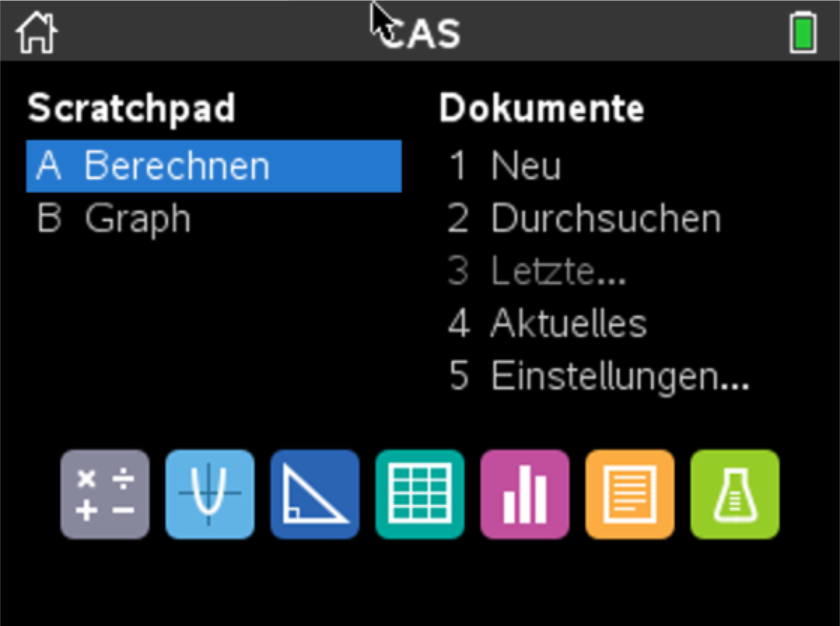<figcaption>Home-Bildschirm: Scratchpad (links) und Dokumente (rechts)</figcaption></figure>'+
      '<h4>Applikationen</h4>'+
      '<ul><li><strong>Calculator</strong> - rechnen, Variablen und Funktionen definieren, solve usw.</li>'+
      '<li><strong>Graphs</strong> - Funktionsgraphen zeichnen und analysieren</li>'+
      '<li><strong>Geometry</strong> - geometrische Figuren erstellen und untersuchen</li>'+
      '<li><strong>Lists &amp; Spreadsheet</strong> - Daten in Tabellen verwalten</li>'+
      '<li><strong>Data &amp; Statistics</strong> - Daten darstellen (Histogramm, Boxplot)</li>'+
      '<li><strong>Notes</strong> - Texte, Berechnungen und Funktionen auf einer Seite</li></ul>'+
      '<p class="tip"><strong>Wichtig:</strong> Es empfiehlt sich, für Berechnungen immer die Applikation <strong>Notes</strong> zu verwenden - Ausnahme: Datenanalyse.</p>'+
      '<h4>Rechnen in Notes</h4>'+
      '<p><code>ctrl m</code> öffnet eine Mathbox. <code>enter</code> berechnet das Resultat exakt (z. B. als Bruch), <code>ctrl enter</code> gibt es approximiert als Dezimalzahl aus - auch wenn der Modus auf exakt steht.</p>'+
      calc([[fr(2,3)+'+'+fr(1,4), fr(11,12)], [fr(2,3)+'+'+fr(1,4)+'<span class="k">ctrl enter</span>', '0.916667']])+
      '<h4>Einstellungen</h4>'+
      '<ul><li><code>Home 5 2</code> Dokumenteinstellungen: angezeigte Ziffern, <strong>Winkelmass</strong>, Berechnungsmodus (Auto, Exakt, Approximiert)</li>'+
      '<li><code>Home 5 3</code> Handheld einrichten: Schriftgrösse, Standby, Energiesparmodus usw.</li></ul>'+
      '<h4>Dokumente, Probleme, Seiten</h4>'+
      '<p>Ordner enthalten Dokumente, ein Dokument enthält Probleme, ein Problem enthält Seiten. Die Nummer <strong>1.2</strong> heisst: Problem 1, Seite 2. Variablen gelten auf allen Seiten desselben Problems.</p>'+
      '<ul><li><code>ctrl n</code> neues Dokument (Seite 1.1)</li>'+
      '<li><code>ctrl i</code> neue Seite im selben Problem</li>'+
      '<li><code>doc 4 1</code> (Einfügen → Problem): neues Problem (Seite 2.1)</li>'+
      '<li><code>ctrl ◄</code> / <code>ctrl ►</code> zwischen Seiten wechseln, <code>ctrl ▲</code> Seitensortierer (Seiten löschen, kopieren, verschieben)</li>'+
      '<li><code>ctrl s</code> speichern, frühere Dokumente unter <code>Home 2</code> Eigene Dateien</li></ul>'+
      '<p class="tip">Die vorgegebenen Ordner nicht umbenennen und in <strong>MyLib</strong> nichts speichern. Ein gelöschtes Dokument lässt sich nicht wiederherstellen.</p>'+
      '<h4>Wichtige Tasten</h4>'+
      '<ul><li><code>menu</code> Menü der Applikation, <code>ctrl menu</code> Kontextmenü (wie rechte Maustaste)</li>'+
      '<li><code>esc</code> Aktion abbrechen, <code>ctrl z</code> rückgängig</li>'+
      '<li><code>tab</code> z. B. Eingabezeile in Graphs ein-/ausblenden</li></ul>'+
      '<p>Alle Tastenkombinationen stehen auch im Nachschlagewerk.</p>',

    2:'<h4>Variablen speichern</h4>'+
      '<p>Mit <code>:=</code> (Taste <code>ctrl :=</code>) speicherst du einen Wert oder einen Term. Eine definierte Variable erscheint danach <strong>fett</strong> und gilt auf allen Seiten des Problems.</p>'+
      calc([['a:=3','3'], ['b:=5','5'], ['u:=2·'+B('a')+'+2·'+B('b'),'16']])+
      '<p class="tip"><strong>Achtung Malzeichen:</strong> Variablennamen dürfen mehrere Buchstaben haben. <code>ab</code> ist darum eine eigene Variable - für das Produkt schreibst du <code>a·b</code>.</p>'+
      calc([['vol:='+B('a')+'·'+B('b')+'·c','15·c']])+
      '<h4>Abrufen und löschen</h4>'+
      '<p>Abrufen: Namen eintippen und <code>enter</code>. Löschen mit <code>delvar</code> (<code>menu</code> 6, 1, 2).</p>'+
      calc([[B('u'),'16'], ['delvar u','Fertig']])+
      '<h4>Termumformungen</h4>'+
      '<p>Ausmultiplizieren mit <code>expand</code> (<code>menu</code> 6, 3, 3), faktorisieren mit <code>factor</code> (<code>menu</code> 6, 3, 2).</p>'+
      calc([['expand((x+1)·(x−3))','x²−2·x−3'], ['factor(x²−2·x−3)','(x−3)·(x+1)']]),

    3:'<h4>Gleichungen und Ungleichungen</h4>'+
      '<p><code>solve(Gleichung, Variable)</code> (<code>menu</code> 6, 3, 1) - die Variable, nach der aufgelöst wird, muss immer angegeben werden. Ungleichungen funktionieren genauso.</p>'+
      calc([['solve(x+3=5·x+2,x)','x='+fr(1,4)], ['solve(x+3&lt;2·x,x)','x&gt;3']])+
      '<h4>Gleichungssysteme</h4>'+
      '<p>Ein System gibst du mit der Vorlage <strong>Gleichungssystem</strong> ein:</p>'+
      '<ol class="steps">'+
        '<li><code>menu</code> 6, 3, 7, 1 öffnet eine Eingabemaske: Anzahl Gleichungen (hier 2) und die Variablen (x, y) eingeben.</li>'+
        '<li>Es erscheint die leere Vorlage, die Variablen sind schon eingetragen:'+
          calc([[solveSys(['<span class="ph"></span>','<span class="ph"></span>'],'x,y'), null]])+'</li>'+
        '<li>Die Gleichungen in die Felder tippen und mit <code>enter</code> lösen:'+
          calc([[solveSys(['x+y=4','x−y=7'],'x,y'),'x='+fr(11,2)+'&nbsp;and&nbsp;y=−'+fr(3,2)]])+'</li>'+
      '</ol>'+
      '<p class="tip">Die Vorlage findest du auch in der Vorlagen-Palette. Geschweifte Klammern <code>{ }</code> für die Variablen erhältst du mit <code>ctrl )</code>.</p>'+
      '<h4>Lösungen weiterverwenden</h4>'+
      '<p>Hat eine Gleichung genau eine Lösung, speicherst du sie mit <code>right</code> (<code>menu</code> 6, 3, D, 2) in einer Variable.</p>'+
      calc([['w:=right(solve(2·x+1=7,x))','3']])+
      '<p>Bei mehreren Lösungen hilft <code>zeros</code> (<code>menu</code> 6, 3, 4). Die Gleichung muss dafür zuerst in die Form <code>… = 0</code> gebracht werden. Die Lösungen stehen dann in einer Liste, einzelne Elemente holst du mit eckigen Klammern.</p>'+
      calc([['r:=zeros(x²−5·x+6,x)','{2,3}'], [B('r')+'[2]','3']])+
      '<div class="tip"><p style="margin:0 0 .4em"><strong>Tipp: Lieber ein Gleichungssystem aufstellen.</strong> Statt Zwischenresultate zu speichern und weiterzuverwenden, lohnt es sich meist, <strong>alle Gleichungen in ein einziges Gleichungssystem</strong> zu schreiben. Der Rechner löst dann alles in einem Schritt. Beispiel: Gesucht ist w=x²+1, wobei 2x+1=7.</p>'+
        calc([[solveSys(['2·x+1=7','w=x²+1'],'x,w'),'x=3&nbsp;and&nbsp;w=10']])+
      '</div>',

    5:'<h4>Funktion definieren und auswerten</h4>'+
      '<p>Definieren mit <code>:=</code>, den Funktionswert erhältst du durch Einsetzen.</p>'+
      calc([['f1(x):=x+2','Fertig'], [B('f1')+'(100)','102']])+
      '<h4>In Graphs</h4>'+
      '<ul><li>Graph anzeigen: Graphs-Seite einfügen, <code>tab</code>, Funktion mit <code>▲</code> anwählen, mit <code>enter</code> bestätigen.</li>'+
      '<li>Fenster anpassen: <code>menu</code> 4 (Fenster/Zoom) oder Doppelklick auf den kleinsten/grössten Wert einer Achse.</li>'+
      '<li>Wertetabelle ein-/ausblenden: <code>ctrl t</code></li>'+
      '<li>Nullstelle: <code>menu</code> 6, 1 &nbsp;·&nbsp; Maximum: <code>menu</code> 6, 2 (Minimum analog) &nbsp;·&nbsp; Schnittpunkt: <code>menu</code> 6, 4</li></ul>'+
      '<p class="tip">In Graphs sind die berechneten Werte immer nur approximiert. Exakte Werte erhältst du in Notes.</p>'+
      '<h4>Nullstellen</h4>'+
      '<p><code>zeros(Funktion, Variable)</code> (<code>menu</code> 6, 3, 4) liefert alle Nullstellen als Liste.</p>'+
      calc([['zeros('+B('f1')+'(x),x)','{−2}']])+
      '<h4>Geradengleichung durch zwei Punkte (TR-Methode)</h4>'+
      '<p>Gesucht ist die Gerade durch <code>P(4/1)</code> und <code>Q(6/2)</code>. Speichere zuerst die Grundform <code>f(x):=m·x+q</code>. Weil P auf der Geraden liegt, gilt <code>f(4)=1</code>, für Q gilt <code>f(6)=2</code>. Dieses System löst der Rechner nach m und q.</p>'+
      '<figure class="fig">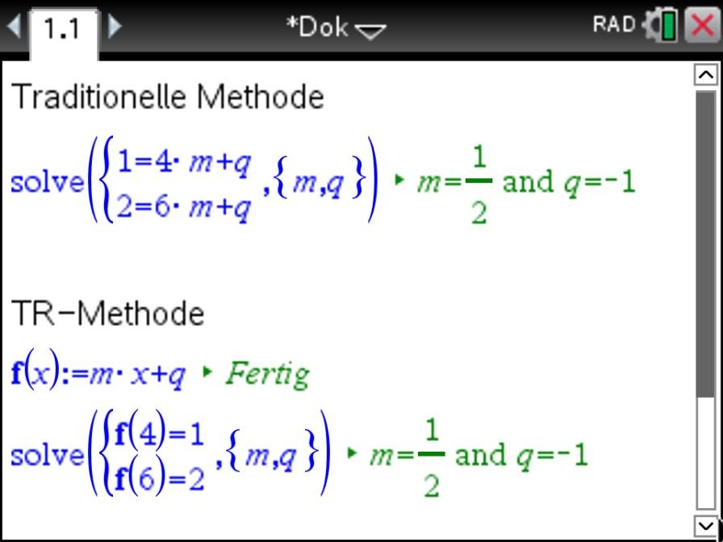<figcaption>Oben die traditionelle Methode (Punkte von Hand eingesetzt), unten die TR-Methode</figcaption></figure>'+
      '<p>Resultat festhalten: <strong>y = ½x − 1</strong>. Die TR-Methode lohnt sich besonders später bei komplizierteren Funktionstypen - die Gleichungen <code>f(4)=1</code> usw. bleiben gleich, nur die Grundform ändert sich.</p>'+
      '<h4>Schnittpunkte (TR-Methode)</h4>'+
      '<p>Speichere beide Funktionen, z. B. <code>f(x):=−2x−5</code> und <code>g(x):=3x+4</code>. Der Schnittpunkt löst das System <code>y=f(x)</code> und <code>y=g(x)</code> nach x und y.</p>'+
      '<figure class="fig">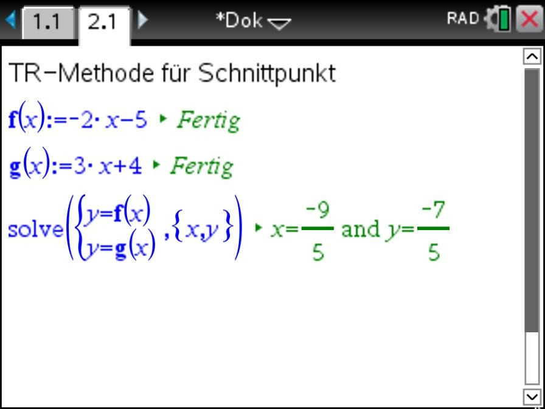<figcaption>Schnittpunkt von f und g mit solve</figcaption></figure>'+
      '<p>Koordinaten festhalten: <strong>S(−9/5 | −7/5)</strong>. Vergleiche das Resultat mit dem Schnittpunkt im Graphen.</p>'+
      '<p class="tip">Das zweizeilige System mit der geschweiften Klammer ist die Vorlage «Gleichungssystem» (<code>menu</code> 6, 3, 7, 1 oder Vorlagen-Palette) - wie bei den Gleichungssystemen.</p>'+
      '<h4>Maximum und Minimum</h4>'+
      '<p><code>fmax</code> (<code>menu</code> 6, 4, 8) bzw. <code>fmin</code> (<code>menu</code> 6, 4, 7) liefert nur die <strong>Stelle</strong> (x-Wert). Den Funktionswert (y-Wert) berechnest du danach durch Einsetzen.</p>'+
      calc([['f2(x):=−x²+4·x','Fertig'], ['fmax('+B('f2')+'(x),x)','x=2'], [B('f2')+'(2)','4']])+
      '<p>Gibt der Rechner <code>x=∞</code> oder <code>x=−∞</code> aus, schränkst du den Bereich mit dem Bedingungsstrich <code>|</code> ein. Ungleichheitszeichen und Strich findest du mit <code>ctrl =</code>.</p>'+
      calc([['f3(x):=x³−3·x','Fertig'], ['fmax('+B('f3')+'(x),x)|−2&lt;x&lt;1','x=−1']])+
      ineqPalette(5, 'Palette über ctrl = (Bedingungsstrich unten rechts)'),
    8:'<h4>Vektor eingeben</h4>'+
      '<p>Ein Vektor wird spaltenweise eingegeben - niemals mit Kommas in einer Zeile.</p>'+
      '<ol><li>Die <strong>Vorlagen-Taste</strong> direkt neben der Ziffer <code>9</code> drücken.</li>'+
      '<li>In der Palette das Matrix-/Vektor-Symbol wählen (2. Zeile, 1. Spalte).</li>'+
      '<li>Für eine zusätzliche Zeile die <strong>Enter-Taste</strong> (unten rechts, Symbol ↵) drücken - dieselbe Taste wie bei Gleichungssystemen.</li></ol>'+
      '<figure class="fig">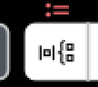<figcaption>Vorlagen-Taste neben der 9</figcaption></figure>'+
      '<figure class="fig">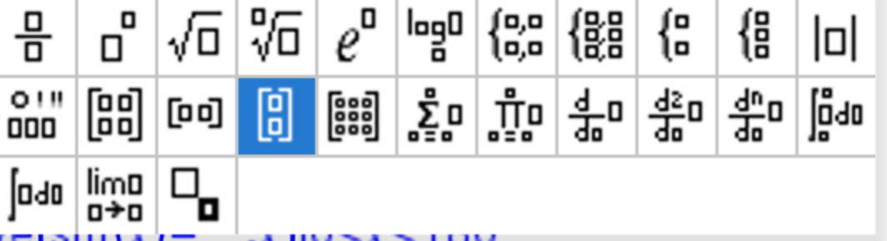<figcaption>Matrix-/Vektor-Symbol (2. Zeile, 1. Spalte)</figcaption></figure>'+
      '<h4>Rechnen mit Vektoren</h4>'+
      '<p>Addition, Subtraktion und skalare Multiplikation über die Tasten <code>+</code>, <code>-</code> und <code>×</code>.</p>'+
      calc([['u:='+vec([1,2,3]), vec([1,2,3])], ['v:='+vec([2,1,2]), vec([2,1,2])], [B('u')+'+'+B('v'), vec([3,3,5])], ['2·'+B('u'), vec([2,4,6])]])+
      '<h4>Betrag, Einheitsvektor, Skalarprodukt</h4>'+
      '<ul><li><code>norm(v)</code> Betrag (<code>menu</code> 6, 7, 7)</li>'+
      '<li><code>unitV(v)</code> Einheitsvektor (<code>menu</code> 6, 7, C, 1)</li>'+
      '<li><code>dotP(u,v)</code> Skalarprodukt (<code>menu</code> 6, 7, C, 3)</li></ul>'+
      calc([['norm('+B('v')+')','3'], ['unitV('+B('v')+')', vec([fr(2,3),fr(1,3),fr(2,3)])], ['dotP('+B('u')+','+B('v')+')','10']])+
      '<h4>Zwischenwinkel</h4>'+
      '<p>Für den Winkel φ zwischen zwei Vektoren gilt cos(φ) = '+fr('u·v','|u|·|v|')+'. Auf dem Rechner kombinierst du dazu <code>dotP</code> und <code>norm</code> und nimmst davon <code>cos⁻¹</code> (Taste <code>trig</code>). Mit den Vektoren u und v von oben:</p>'+
      calc([['cos⁻¹'+'<span class="grp">'+brk('(')+fr('dotP('+B('u')+','+B('v')+')','norm('+B('u')+')·norm('+B('v')+')')+brk(')')+'</span><span class="k">ctrl enter</span>','27.0171']])+
      '<p class="tip"><strong>Wichtig:</strong> Für einen Winkel in Grad muss das Winkelmass auf <strong>Grad</strong> stehen (oben rechts <code>DEG</code>; falls <code>RAD</code> steht, direkt darauf klicken). Im Bogenmass erhältst du 0.471538.</p>',

    4:'<h4>Winkelmass prüfen</h4>'+
      '<p>Trigonometrische Gleichungen können im <strong>Gradmass</strong> oder im <strong>Bogenmass</strong> gestellt sein. Die aktuelle Einstellung siehst du <strong>oben rechts in der Titelleiste</strong>, direkt links neben der Batterieanzeige:</p>'+
      '<ul><li><code>DEG</code> - Gradmass, Lösungen z. B. 30 und 150 (Grad)</li>'+
      '<li><code>RAD</code> - Bogenmass, Lösungen z. B. π/6 und 5π/6</li></ul>'+
      '<p><strong>Umstellen:</strong> Fahre mit dem Touchpad oben rechts auf <code>DEG</code> bzw. <code>RAD</code> und klicke direkt darauf - das Winkelmass wechselt sofort. (Der Umweg über <code>Home 5 2</code>, Dokumenteinstellungen, geht auch, ist aber umständlicher.) Dieselbe Gleichung <code>sin(x)=0.2</code> in beiden Einstellungen:</p>'+
      '<div class="figpair">'+
        '<figure class="fig"><div class="shot">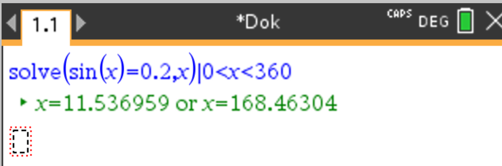<span class="ring" style="left:81.5%;top:3%;width:10%;height:19%"></span></div>'+
          '<figcaption>Gradmass: oben rechts DEG, Bereich 0&lt;x&lt;360</figcaption></figure>'+
        '<figure class="fig"><div class="shot">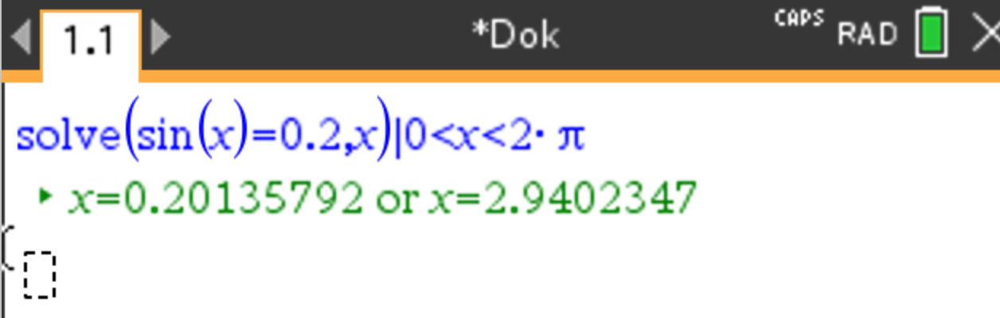<span class="ring" style="left:81.5%;top:1.5%;width:10%;height:19%"></span></div>'+
          '<figcaption>Bogenmass: oben rechts RAD, Bereich 0&lt;x&lt;2π</figcaption></figure>'+
      '</div>'+
      '<p class="tip">Ist das falsche Winkelmass eingestellt, rechnet der Rechner trotzdem weiter - ohne Fehlermeldung, aber mit falschen Lösungen.</p>'+
      '<h4>Unendlich viele Lösungen</h4>'+
      '<p>sin, cos und tan sind periodisch, darum gibt es unendlich viele Lösungen. Ohne Einschränkung erscheint eine Konstante wie <code>n1</code>, die für eine beliebige ganze Zahl steht.</p>'+
      calc([['solve(sin(x)='+fr(1,2)+',x)','x=30·(12·<b><i>n1</i></b>+1)&nbsp;or&nbsp;x=30·(12·<b><i>n1</i></b>+5)']])+
      '<p>Dieses und das nächste Beispiel sind im Gradmass (<code>DEG</code>) gerechnet.</p>'+
      '<h4>Lösungsbereich einschränken</h4>'+
      '<p>Mit dem Bedingungsstrich <code>|</code> (über <code>ctrl =</code>, Feld unten rechts) gibst du den gewünschten Bereich an.</p>'+
      calc([['solve(sin(x)='+fr(1,2)+',x)|0&lt;x&lt;180','x=30&nbsp;or&nbsp;x=150']])+
      ineqPalette(5, 'Palette über ctrl = (Bedingungsstrich unten rechts)')+
      '<p>sin, cos, tan und ihre Umkehrfunktionen findest du über die Taste <code>trig</code>.</p>'+
      trigPalette()+
      '<h4>Im Bogenmass</h4>'+
      '<p>Mit der Einstellung <code>RAD</code> gibst du den Bereich mit π an. Der Rechner liefert die Lösungen wenn möglich exakt als Vielfache von π, mit <code>ctrl enter</code> als Dezimalzahlen.</p>'+
      calc([['solve(sin(x)='+fr(1,2)+',x)|0&lt;x&lt;π','x='+fr('π','6')+'&nbsp;or&nbsp;x='+fr('5·π','6')], ['solve(sin(x)='+fr(1,2)+',x)|0&lt;x&lt;π<span class="k">ctrl enter</span>','x=0.523599&nbsp;or&nbsp;x=2.61799']])+
      '<h4>Sinussatz</h4>'+
      '<p class="tip"><strong>Wichtig:</strong> Beim Sinus- und Cosinussatz sind die Winkel in Grad angegeben - das Winkelmass muss auf <strong>Grad</strong> stehen (oben rechts <code>DEG</code>; falls <code>RAD</code> steht, direkt darauf klicken).</p>'+
      '<p>Bezeichnungen wie üblich: Die Seite a liegt dem Winkel α gegenüber, b dem Winkel β, c dem Winkel γ. Beispiel: a = 7, b = 9 und α = 40°, gesucht ist β. Für den unbekannten Winkel verwendest du die Variable x.</p>'+
      calc([['solve('+fr('sin(x)','9')+'='+fr('sin(40)','7')+',x)|0&lt;x&lt;180','x=55.7349&nbsp;or&nbsp;x=124.265']])+
      '<p>Der Rechner liefert <strong>zwei</strong> Winkel. Beide sind möglich, weil auch 40° + 124.265° kleiner als 180° ist - es gibt also zwei verschiedene Dreiecke. Prüfe darum immer, ob α + β &lt; 180° gilt.</p>'+
      '<p class="tip">Zeigt der Rechner statt Dezimalzahlen einen Ausdruck mit sin⁻¹, erhältst du die Werte mit <code>ctrl enter</code>.</p>'+
      '<h4>Cosinussatz</h4>'+
      '<p>Beispiel: a = 5, b = 7 und γ = 60°, gesucht ist die Seite c. Mit <code>|c&gt;0</code> schliesst du die negative Lösung aus.</p>'+
      calc([['solve(c²=5²+7²−2·5·7·cos(60),c)|c&gt;0','c=√<span style="text-decoration:overline">39</span>'], ['solve(c²=5²+7²−2·5·7·cos(60),c)|c&gt;0<span class="k">ctrl enter</span>','c=6.245']])+
      '<p>Mit dem Cosinussatz kannst du genauso einen Winkel berechnen, zum Beispiel wenn alle drei Seiten bekannt sind - dann löst du nach x auf und schränkst mit <code>|0&lt;x&lt;180</code> ein.</p>',

    6:'<h4>1. Daten erfassen</h4>'+
      '<ol class="steps">'+
        '<li>Applikation <strong>Lists &amp; Spreadsheet</strong> öffnen.</li>'+
        '<li>Merkmale in die erste Spalte (A), Häufigkeiten in die zweite Spalte (B) eintragen. Die Spalten ganz oben benennen mit <code>werte</code> und <code>hauf</code>.'+
          '<figure class="fig">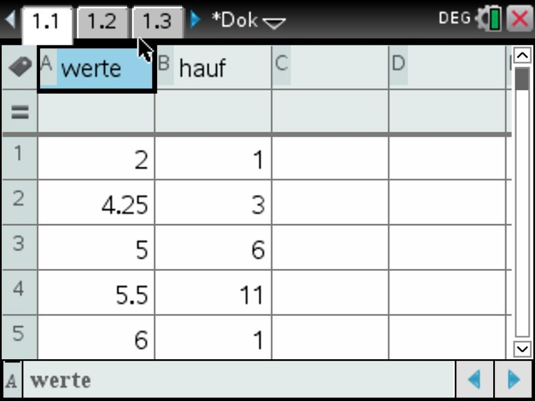<figcaption>Spalte A heisst werte, Spalte B heisst hauf</figcaption></figure></li>'+
        '<li>Spalte C mit <code>werte1</code> benennen. In die Formelzeile darunter (Zeile mit dem Gleichheitszeichen) kommt der Befehl, der jeden Wert so oft auflistet, wie er vorkommt:'+
          calc([['werte1:=freqTable►list(werte,hauf)', null]])+
          '<p>Den Befehl findest du im Lexikon (Taste mit dem Buch-Symbol ): Im ersten Register sind alle Befehle alphabetisch aufgelistet. Tippe <strong>f</strong>, um zu den Befehlen mit f zu springen, wähle <code>freqTable▶list(</code> und füge den Befehl mit <code>enter</code> ein.</p>'+
          '<figure class="fig">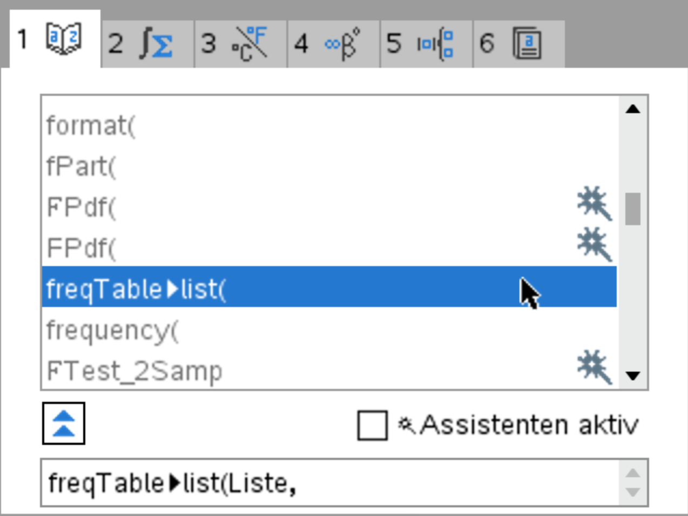<figcaption>Lexikon, Register 1: freqTable▶list( ist angewählt, unten steht die Syntax</figcaption></figure>'+
          '<figure class="fig">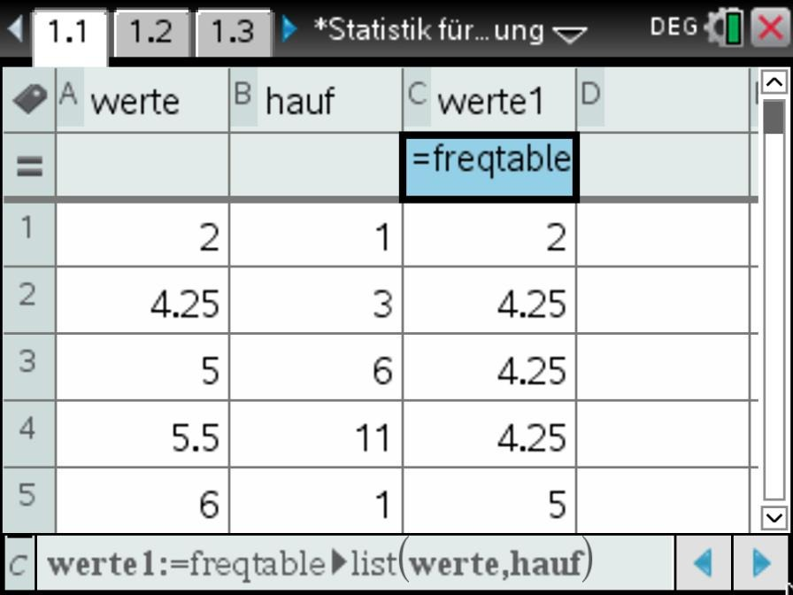<figcaption>Spalte C enthält jetzt alle Werte einzeln: 2, dann dreimal 4.25 usw.</figcaption></figure></li>'+
      '</ol>'+
      '<p class="tip">Kommt jeder Wert nur einmal vor, braucht es die zweite und dritte Spalte nicht.</p>'+
      '<h4>2. Lage- und Streumasse</h4>'+
      '<ol class="steps">'+
        '<li>Applikation <strong>Notes</strong> öffnen und <code>menu</code> 6, 6, 1, 1 Statistik mit einer Variablen wählen.</li>'+
        '<li>Die Anzahl der Listen 1 mit OK bestätigen.'+
          '<figure class="fig">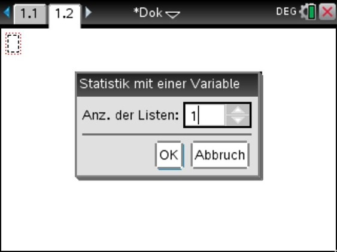<figcaption>Anzahl der Listen: 1</figcaption></figure></li>'+
        '<li>Bei X1-Liste die erzeugte Liste <code>werte1</code> wählen und mit OK bestätigen.'+
          '<figure class="fig">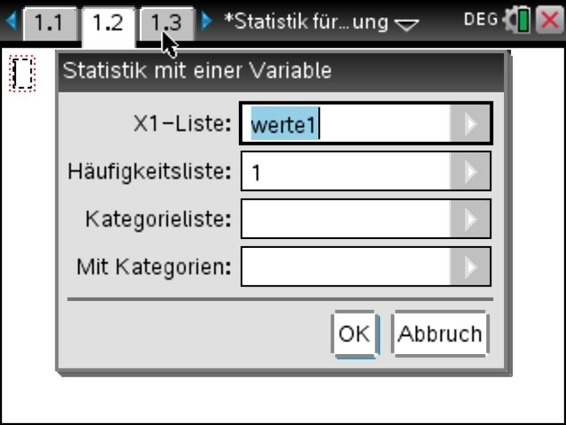<figcaption>X1-Liste: werte1</figcaption></figure></li>'+
        '<li>Es erscheint eine Übersicht aller Lage- und Streumasse:'+
          '<figure class="fig">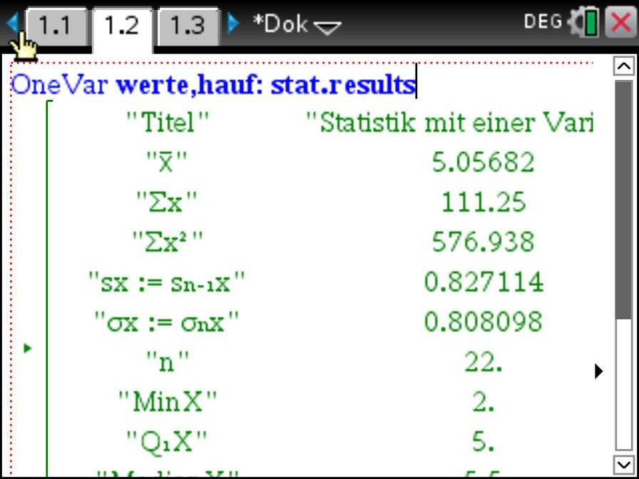<figcaption>Übersicht aller Lage- und Streumasse</figcaption></figure></li>'+
      '</ol>'+
      '<table class="legend">'+
        '<tr><td>x̄</td><td>Mittelwert</td></tr>'+
        '<tr><td>Σx</td><td>Summe aller Werte</td></tr>'+
        '<tr><td>Σx²</td><td>Summe der quadrierten Werte</td></tr>'+
        '<tr><td>sx</td><td>Standardabweichung der Stichprobe (Nenner n−1)</td></tr>'+
        '<tr><td>σx</td><td>Standardabweichung der Grundgesamtheit (Nenner n)</td></tr>'+
        '<tr><td>n</td><td>Anzahl Werte</td></tr>'+
        '<tr><td>MinX / MaxX</td><td>kleinster / grösster Wert</td></tr>'+
        '<tr><td>Q₁X / Q₃X</td><td>erstes / drittes Quartil</td></tr>'+
        '<tr><td>MedianX</td><td>Median</td></tr>'+
        '<tr><td>SSX</td><td>Summe der quadratischen Abweichungen</td></tr>'+
      '</table>'+
      '<h4>3. Varianz</h4>'+
      '<p>Die Varianz steht nicht in der Liste. Alle Werte sind aber als Variablen gespeichert und in Notes über die Taste <code>var</code> abrufbar. So berechnest du die Varianz aus der Standardabweichung:</p>'+
      calc([['stat.σx²','0.653022']])+
      '<p><code>stat.σx²</code> ergibt die Varianz mit Nenner n, <code>stat.sx²</code> diejenige mit Nenner n−1.</p>',

    7:'<p class="tip"><strong>Voraussetzung:</strong> Die Daten sind wie im Themenbereich «Statistik: Datenerfassung, Lage- und Streumasse» erfasst - in <strong>Lists &amp; Spreadsheet</strong> mit den Spalten <code>werte</code>, <code>hauf</code> und der Liste <code>werte1</code>.</p>'+
      '<h4>Daten darstellen</h4>'+
      '<ol><li><strong>Data &amp; Statistics</strong> öffnen - zuerst erscheint eine ungeordnete Punktwolke.</li>'+
      '<li>Auf der x-Achse die Liste <code>werte1</code> wählen, die Werte erscheinen geordnet.</li></ol>'+
      '<h4>Histogramm</h4>'+
      '<ol><li><code>menu</code> 1, 3 Histogramm.</li>'+
      '<li>Säulenbreite unter <code>menu</code> 2, 2, 2, 1 (gleiche Säulenbreite), z. B. Breite 1, ausgerichtet bei 0.</li>'+
      '<li>Relative Häufigkeit auf der y-Achse: <code>menu</code> 2, 2, 1, 2 (Prozent). Achsen bei Bedarf ziehen, bis alle Säulen sichtbar sind.</li></ol>'+
      '<figure class="fig">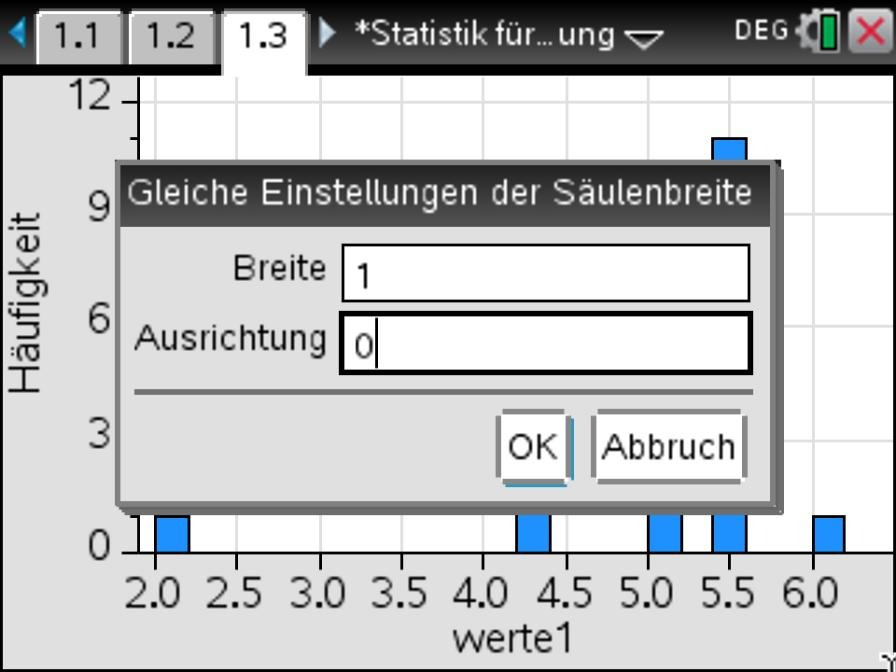<figcaption>Säulenbreite einstellen: Breite 1, Ausrichtung 0</figcaption></figure>'+
      '<p>Mit Breite 1 und Ausrichtung 0 beginnen die Säulen bei 0, 1, 2, … - ein Wert auf der Grenze (z. B. 2) gehört zur Säule rechts davon (2 bis 3).</p>'+
      '<figure class="fig">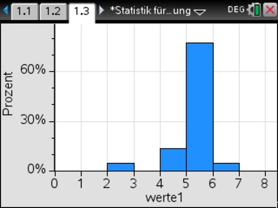<figcaption>Fertiges Histogramm mit relativer Häufigkeit in Prozent</figcaption></figure>'+
      '<h4>Boxplot</h4>'+
      '<p><code>menu</code> 1, 2 Boxplot. Die Box reicht vom ersten Quartil Q₁ bis zum dritten Quartil Q₃, der Strich in der Box ist der Median. Die Antennen reichen bis zum kleinsten bzw. grössten Wert, der kein Ausreisser ist - Ausreisser (wie der Punkt bei 2 im Bild) zeichnet der Rechner einzeln.</p>'+
      '<figure class="fig">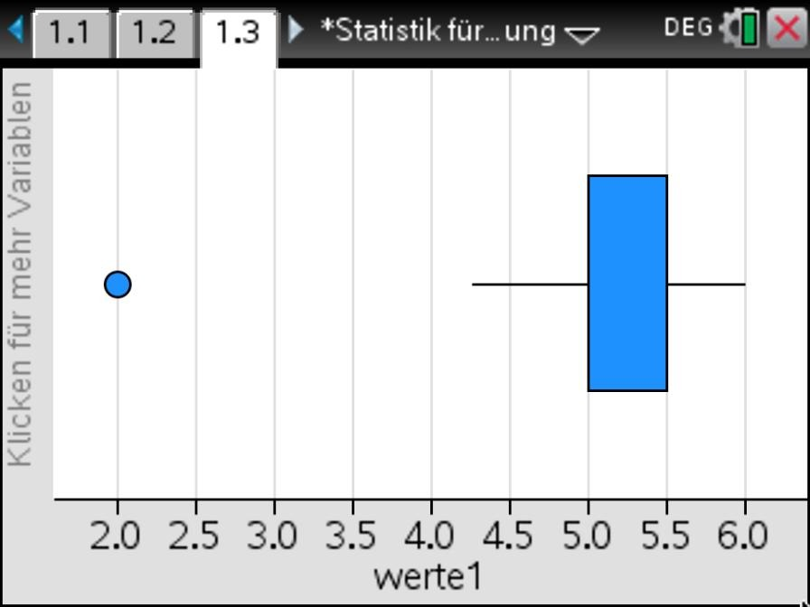<figcaption>Fertiger Boxplot</figcaption></figure>'+
      '<p>Median und Quartile sind dieselben Werte wie bei den Lage- und Streumassen (MedianX, Q₁X, Q₃X).</p>'
  };

  /* ================= LEVELS ================= */
  var LEVELS = [
    {id:1, title:"Grundlagen des Geräts",                          color:"#5b6fd6", desc:"Home-Bildschirm, Notes, exakt/approximiert, Dokumente und Seiten"},
    {id:2, title:"Variablen und Terme",                               color:"#2f80c8", desc:":=, delvar, expand, factor"},
    {id:3, title:"Gleichungen, Ungleichungen und Gleichungssysteme",            color:"#178a86", desc:"solve, Gleichungssysteme, right, zeros"},
    {id:4, title:"Trigonometrische Gleichungen, Sinussatz, Cosinussatz",                    color:"#2f8f55", desc:"Winkelmass, Lösungsbereich mit |, Bogenmass, Sinus- und Cosinussatz"},
    {id:5, title:"Funktionen: Definieren, Nullstellen, Schnittpunkte, Extrema",   color:"#ad720b", desc:"f(x):=, Graphs, zeros, TR-Methode, Schnittpunkte, fmax/fmin"},
    {id:6, title:"Statistik: Datenerfassung, Lage- und Streumasse",                color:"#d0592b", desc:"Lists & Spreadsheet, freqTable►list, Lage- und Streumasse, Varianz"},
    {id:7, title:"Statistik: Histogramm und Boxplot",                               color:"#cc4766", desc:"Data & Statistics, Säulenbreite, Prozent, Boxplot"},
    {id:8, title:"Vektoren",                                        color:"#8a5ac4", desc:"Vektor eingeben, norm, unitV, dotP, Zwischenwinkel"}
  ];

  /* ================= EXERCISES ================= */
  var EXERCISES = [
    {level:1, id:"geraet1", type:"text", accept:["notes"],
     prompt:'Welche Applikation solltest du im Normalfall für Aufgaben in diesem Kurs verwenden (Ausnahme: Datenanalyse)?',
     hint:"Diese Applikation kombiniert Text, Berechnungen und Funktionen.",
     solution:"Notes - eignet sich für fast alles, ausser für die Datenanalyse."},
    {level:1, id:"zahl1", type:"numeric", correct:[0.916667], tol:0.0005,
     prompt:'Berechne in einer Mathbox <code>2/3+1/4</code>. Drücke zuerst <code>enter</code>, dann <code>ctrl enter</code>. Welchen Dezimalwert zeigt der Rechner?',
     hint:"enter liefert das exakte Resultat (Bruch), ctrl enter das approximierte.",
     solution:"exakt 11/12, approximiert 0.916667"},
    {level:1, id:"einst1", type:"text", accept:["home52"],
     prompt:'Mit welcher Tastenfolge öffnest du die Dokumenteinstellungen (Ziffern, Winkelmass, Berechnungsmodus)? Schreibe z. B. <code>Home 1 2</code>.',
     hint:"Zuerst die Home-Taste, dann zweimal eine Ziffer - die Einstellungen sind unter Punkt 5.",
     solution:"Home 5 2"},
    {level:1, id:"seite1", type:"numeric", correct:[2.1], tol:0.001,
     prompt:'Du hast ein neues Dokument (Seite 1.1) und fügst mit <code>doc</code> → Einfügen → Problem ein neues Problem ein. Welche Nummer hat die neue Seite?',
     hint:"Die erste Zahl ist das Problem, die zweite die Seite.",
     solution:"2.1 (Problem 2, Seite 1)"},

    {level:2, id:"var1", type:"numeric", correct:[35], tol:0.001,
     prompt:'Speichere <code>a:=4</code> und <code>b:=9</code>. Berechne danach <code>2a+3b</code>. Welches Ergebnis zeigt der Rechner?',
     hint:"a:=4 und b:=9 speichern (ctrl :=), dann 2·a+3·b eintippen und enter.",
     solution:"2·4+3·9 = 35"},
    {level:2, id:"var2", type:"numeric", correct:[30], tol:0.001,
     prompt:'Speichere <code>a:=5</code>, <code>b:=3</code> und <code>c:=2</code>. Definiere dann <code>vol:=a·b·c</code> - Malzeichen nicht vergessen! Welchen Wert hat <code>vol</code>?',
     hint:"Ohne Malzeichen wäre abc eine eigene, neue Variable.",
     solution:"vol = 5·3·2 = 30"},
    {level:2, id:"var4", type:"text", accept:["a+1"],
     prompt:'Speichere <code>a:=5</code> und lösche die Variable danach mit <code>delvar a</code>. Was zeigt der Rechner, wenn du jetzt <code>a+1</code> eingibst?',
     hint:"Nach delvar ist a wieder eine unbekannte Variable ohne Wert.",
     solution:"a+1 (a hat keinen Wert mehr und ist nicht mehr fett)"},
    {level:2, id:"term1", type:"text", accept:["x^2-x-12","x²-x-12"],
     prompt:'Multipliziere mit <code>expand</code> aus: <code>(x+3)(x-4)</code>. Wie lautet das Ergebnis?',
     hint:"expand((x+3)·(x-4)) eintippen.",
     solution:"x²-x-12"},
    {level:2, id:"term2", type:"text", accept:["(x-3)(x-4)","(x-4)(x-3)","(x-3)*(x-4)","(x-4)*(x-3)"],
     prompt:'Faktorisiere mit <code>factor</code>: <code>x²-7x+12</code>. Wie lautet das Ergebnis?',
     hint:"factor(x^2-7·x+12) eintippen.",
     solution:"(x-3)·(x-4)"},

    {level:3, id:"eq1", type:"numeric", correct:[6], tol:0.001,
     prompt:'Löse: <code>9x+5=4x+35</code>. Wie lautet <code>x</code>?',
     hint:"solve(9x+5=4x+35,x) eintippen.",
     solution:"x=6"},
    {level:3, id:"eq2", type:"numeric", correct:[5], tol:0.001,
     prompt:'Löse: <code>8x-7=3x+18</code>. Wie lautet <code>x</code>?',
     hint:"solve(8x-7=3x+18,x) eintippen.",
     solution:"x=5"},
    {level:3, id:"ineq1", type:"text", accept:["x>3"],
     prompt:'Löse: <code>2x+7&gt;x+10</code>. Für welche <code>x</code> gilt die Ungleichung? (z. B. <code>x&gt;...</code>)',
     hint:"solve(2x+7>x+10,x) eintippen.",
     solution:"x>3"},
    {level:3, id:"sys1", type:"text",
     accept:["x=5,y=4","x=5;y=4","y=4,x=5","y=4;x=5","x=5andy=4","x=5undy=4"],
     prompt:'Löse das System <code>x+y=9</code> und <code>x-y=1</code>. Schreibe <code>x=..., y=...</code>',
     hint:"Vorlage Gleichungssystem (menu 6, 3, 7, 1) mit x+y=9 und x-y=1, Variablen {x,y}.",
     solution:"x=5, y=4"},
    {level:3, id:"right1", type:"numeric", correct:[26], tol:0.001,
     prompt:'Löse <code>4x-7=13</code> und speichere die Lösung mit <code>w:=right(solve(4x-7=13,x))</code>. Berechne danach <code>w²+1</code>.',
     hint:"right holt die rechte Seite von x=..., also den Zahlwert.",
     solution:"w=5, w²+1 = 26"},
    {level:3, id:"zeros1", type:"numeric", correct:[-3,4], tol:0.001,
     prompt:'Löse <code>x²-x=12</code> mit <code>zeros</code>. Bringe die Gleichung zuerst in die Form <code>…=0</code>. Wie lauten beide Lösungen?',
     hint:"zeros(x^2-x-12,x) eintippen.",
     solution:"{-3, 4}"},

    {level:5, id:"fn1", type:"numeric", correct:[7], tol:0.001,
     prompt:'Definiere <code>f1(x):=3x-5</code> und berechne <code>f1(4)</code>.',
     hint:"f1(x):=3x-5 eintippen, dann f1(4).",
     solution:"f1(4) = 3·4-5 = 7"},
    {level:5, id:"fn2", type:"numeric", correct:[-11], tol:0.001,
     prompt:'Definiere <code>f1(x):=3x-5</code> (falls noch nicht geschehen) und berechne <code>f1(-2)</code>.',
     hint:"f1(-2) eintippen - Vorzeichen-Taste (-) verwenden.",
     solution:"f1(-2) = 3·(-2)-5 = -11"},
    {level:5, id:"tab1", type:"numeric", correct:[13], tol:0.001,
     prompt:'Zeichne <code>f(x)=x²-3</code> in Graphs und blende mit <code>ctrl t</code> die Wertetabelle ein. Welcher Funktionswert steht bei <code>x=4</code>?',
     hint:"Graphs-Seite einfügen, f1(x)=x^2-3 eingeben, dann ctrl t.",
     solution:"f(4) = 13"},
    {level:5, id:"zero1", type:"numeric", correct:[1.6667], tol:0.01,
     prompt:'Berechne mit <code>zeros</code> die Nullstelle von <code>f1(x)=3x-5</code>. Wie lautet <code>x</code>? (Bruch oder Dezimalzahl)',
     hint:"zeros(f1(x),x) eintippen.",
     solution:"x = 5/3 ≈ 1.667"},
    {level:5, id:"gerade1", type:"numeric", correct:[-3,1], tol:0.001,
     prompt:'Bestimme mit der TR-Methode die Gerade durch <code>P(-2/7)</code> und <code>Q(3/-8)</code>. Gib <code>m</code> und <code>q</code> an.',
     hint:"f(x):=m·x+q speichern, dann das System f(-2)=7, f(3)=-8 nach {m,q} lösen.",
     solution:"m=-3, q=1, also y=-3x+1"},
    {level:5, id:"gerade2", type:"numeric", correct:[0.4897959,-0.4489796], tol:0.001,
     prompt:'Bestimme mit der TR-Methode die Gerade durch <code>A(201/98)</code> und <code>B(103/50)</code>. Gib <code>m</code> und <code>q</code> an (Bruch oder Dezimalzahl).',
     hint:"f(x):=m·x+q speichern, dann das System f(201)=98, f(103)=50 nach {m,q} lösen.",
     solution:"m=24/49, q=-22/49, also y=24/49·x-22/49"},
    {level:5, id:"schnitt1", type:"numeric", correct:[2,5], tol:0.001,
     prompt:'Bestimme den Schnittpunkt der Graphen von <code>f(x)=2x+1</code> und <code>g(x)=-x+7</code>. Gib x und y an.',
     hint:"TR-Methode: f(x):=2x+1 und g(x):=-x+7 speichern, dann das System y=f(x), y=g(x) nach {x,y} lösen.",
     solution:"x=2, y=5 - Schnittpunkt S(2|5)"},
    {level:5, id:"zero2", type:"numeric", correct:[3], tol:0.01,
     prompt:'Bestimme mit <code>fmax</code> die Maximalstelle von <code>g(x)=-x²+6x</code>. Wie lautet <code>x</code>?',
     hint:"g(x):=-x^2+6x definieren, dann fmax(g(x),x).",
     solution:"x=3"},
    {level:5, id:"maxy1", type:"numeric", correct:[9], tol:0.01,
     prompt:'Wie gross ist das Maximum (der y-Wert) von <code>g(x)=-x²+6x</code>?',
     hint:"fmax liefert nur die Stelle x=3 - berechne danach g(3).",
     solution:"g(3) = 9"},

    {level:8, id:"vec1", type:"numeric", correct:[10], tol:0.01,
     prompt:'Gib den Vektor <code>v</code> mit den Komponenten <code>6, 8, 0</code> ein (Vorlagen-Taste, Enter für weitere Zeilen). Was ist <code>norm(v)</code>?',
     hint:"v als Spaltenvektor mit 6, 8, 0 eingeben, dann norm(v).",
     solution:"norm(v) = 10"},
    {level:8, id:"vec2", type:"numeric", correct:[3], tol:0.01,
     prompt:'Für <code>u</code> mit den Komponenten <code>2, 1, -1</code> und <code>v</code> mit <code>1, 3, 2</code>: Was ist <code>dotP(u,v)</code>?',
     hint:"u und v als Spaltenvektoren speichern, dann dotP(u,v).",
     solution:"dotP(u,v) = 2+3-2 = 3"},
    {level:8, id:"vec3", type:"numeric", correct:[5,2,1], tol:0.001,
     prompt:'Für <code>u</code> mit den Komponenten <code>1, 2, 3</code> und <code>v</code> mit <code>2, 0, -1</code>: Berechne <code>u+2v</code>. Gib die drei Komponenten an.',
     hint:"u und v speichern, dann u+2·v eintippen.",
     solution:"(5, 2, 1)"},
    {level:8, id:"vec4", type:"numeric", correct:[0.6,0,0.8], tol:0.001,
     prompt:'Berechne den Einheitsvektor <code>unitV(w)</code> für <code>w</code> mit den Komponenten <code>3, 0, 4</code>. Gib die drei Komponenten an.',
     hint:"w speichern, dann unitV(w). Brüche oder Dezimalzahlen sind beide ok.",
     solution:"(3/5, 0, 4/5) = (0.6, 0, 0.8)"},
    {level:8, id:"vec5", type:"numeric", correct:[84.231819], tol:0.05,
     prompt:'Berechne den Zwischenwinkel der Vektoren <code>u</code> mit den Komponenten <code>2, -1, 2</code> und <code>v</code> mit <code>1, 3, 1</code> (in Grad).',
     hint:"u und v speichern, dann cos⁻¹(dotP(u,v)/(norm(u)·norm(v))) eintippen - Winkelmass Grad.",
     solution:"φ ≈ 84.23°"},

    {level:4, id:"trig1", type:"numeric", correct:[60,300], tol:0.1,
     prompt:'Löse <code>cos(x)=0.5</code> für <code>0°&lt;x&lt;360°</code>. Wie lauten beide Lösungen?',
     hint:"solve(cos(x)=0.5,x)|0<x<360 - Bedingungsstrich über ctrl =, Winkelmass Grad.",
     solution:"x=60 oder x=300"},
    {level:4, id:"trig2", type:"numeric", correct:[210,330], tol:0.1,
     prompt:'Löse <code>sin(x)=-0.5</code> für <code>180°&lt;x&lt;360°</code>. Wie lauten beide Lösungen?',
     hint:"solve(sin(x)=-0.5,x)|180<x<360 eintippen.",
     solution:"x=210 oder x=330"},
    {level:4, id:"trig3", type:"numeric", correct:[45,225], tol:0.1,
     prompt:'Löse <code>tan(x)=1</code> für <code>0°&lt;x&lt;360°</code>. Wie lauten beide Lösungen?',
     hint:"solve(tan(x)=1,x)|0<x<360 eintippen.",
     solution:"x=45 oder x=225"},
    {level:4, id:"trig4", type:"numeric", correct:[1.0471976,5.2359878], tol:0.01,
     prompt:'Stelle das Winkelmass auf <strong>Bogenmass</strong> (<code>RAD</code>) und löse <code>cos(x)=1/2</code> für <code>0&lt;x&lt;2π</code>. Wie lauten beide Lösungen? (exakt mit π oder als Dezimalzahl)',
     hint:"Oben rechts auf DEG klicken → RAD (Bogenmass), dann solve(cos(x)=1/2,x)|0<x<2π eintippen.",
     solution:"x = π/3 oder x = 5π/3 (≈ 1.0472 und 5.23599)"},
    {level:4, id:"sin1", type:"numeric", correct:[35.067], tol:0.05,
     prompt:'In einem Dreieck sind <code>a = 8</code>, <code>b = 6</code> und <code>α = 50°</code>. Berechne β mit dem Sinussatz. Welcher Winkel β ist möglich?',
     hint:"solve(sin(x)/6=sin(50)/8,x)|0<x<180 - prüfe danach bei jeder Lösung, ob α+β kleiner als 180° ist.",
     solution:"β ≈ 35.07° (der zweite Wert 144.93° ist nicht möglich, weil 50° + 144.93° grösser als 180° ist)"},
    {level:4, id:"cos1", type:"numeric", correct:[82.819], tol:0.05,
     prompt:'In einem Dreieck sind <code>a = 4</code>, <code>b = 5</code> und <code>c = 6</code>. Berechne den Winkel γ mit dem Cosinussatz.',
     hint:"solve(6²=4²+5²-2·4·5·cos(x),x)|0<x<180 eintippen.",
     solution:"γ ≈ 82.82°"},

    {level:6, id:"stat1", type:"numeric", correct:[4], tol:0.001,
     prompt:'Erfasse die Werte <code>2, 4, 4, 6</code> und berechne die Lage- und Streumasse. Wie gross ist der Mittelwert <code>x̄</code>?',
     hint:"Werte in Lists & Spreadsheet, dann in Notes menu 6, 6, 1, 1.",
     solution:"x̄ = 4"},
    {level:6, id:"stat2", type:"numeric", correct:[1.41421], tol:0.01,
     prompt:'Wie gross ist die Standardabweichung der Grundgesamtheit <code>σx</code> (Nenner n) der Daten <code>2, 4, 4, 6</code>?',
     hint:"σx in der Übersicht ablesen (Nenner n).",
     solution:"σx ≈ 1.41421"},
    {level:6, id:"stat3", type:"numeric", correct:[1.63299], tol:0.01,
     prompt:'Wie gross ist die Standardabweichung der Stichprobe <code>sx</code> (Nenner n−1) der Daten <code>2, 4, 4, 6</code>?',
     hint:"sx in der Übersicht ablesen (Nenner n−1).",
     solution:"sx ≈ 1.63299"},
    {level:6, id:"var3", type:"numeric", correct:[2], tol:0.01,
     prompt:'Wie gross ist die Varianz (Nenner n) der Daten <code>2, 4, 4, 6</code>?',
     hint:"stat.σx² eintippen (über die Taste var).",
     solution:"stat.σx² = 2"},
    {level:6, id:"freq1", type:"numeric", correct:[2.3], tol:0.001,
     prompt:'Die Werte <code>1, 2, 3</code> kommen mit den Häufigkeiten <code>2, 3, 5</code> vor. Erfasse sie in den Spalten <code>werte</code> und <code>hauf</code> und erzeuge <code>werte1</code> mit <code>freqTable►list</code>. Wie gross ist der Mittelwert?',
     hint:"werte1:=freqTable►list(werte,hauf), danach Statistik mit einer Variablen mit werte1.",
     solution:"x̄ = 23/10 = 2.3"},
    {level:6, id:"freq2", type:"numeric", correct:[2.5], tol:0.001,
     prompt:'Die Werte <code>1, 2, 3</code> kommen mit den Häufigkeiten <code>2, 3, 5</code> vor (Liste <code>werte1</code>). Wie lautet der Median?',
     hint:"MedianX in der Übersicht ablesen.",
     solution:"Median = 2.5"},
    {level:7, id:"hist1", type:"numeric", correct:[50], tol:0.5,
     prompt:'Erfasse die Werte <code>1, 2, 3</code> mit den Häufigkeiten <code>2, 3, 5</code> (Liste <code>werte1</code> mit freqTable►list) und erstelle ein Histogramm mit Säulenbreite 1, Ausrichtung 0 und Prozent auf der y-Achse. Wie hoch ist die höchste Säule (in %)?',
     hint:"Data & Statistics, werte1 auf die x-Achse, menu 1, 3 Histogramm, Säulenbreite menu 2, 2, 2, 1, Prozent menu 2, 2, 1, 2.",
     solution:"50 % (der Wert 3 kommt 5 von 10 Mal vor)"},
    {level:7, id:"hist2", type:"numeric", correct:[30], tol:0.5,
     prompt:'Histogramm der Werte <code>1, 2, 3</code> mit den Häufigkeiten <code>2, 3, 5</code> (Säulenbreite 1, Ausrichtung 0, Prozent): Wie hoch ist die Säule von 2 bis 3 (in %)?',
     hint:"Fahre mit dem Zeiger über die Säule oder lies die Höhe an der y-Achse ab.",
     solution:"30 % (der Wert 2 kommt 3 von 10 Mal vor)"},
    {level:7, id:"box1", type:"numeric", correct:[4], tol:0.001,
     prompt:'Erfasse die Werte <code>2, 4, 4, 6</code> und zeichne den Boxplot. Bei welchem Wert liegt der Strich in der Box (Median)?',
     hint:"Data & Statistics, Liste auf die x-Achse, menu 1, 2 Boxplot.",
     solution:"Median = 4"},
    {level:7, id:"box2", type:"numeric", correct:[3,5], tol:0.001,
     prompt:'Zeichne den Boxplot der Werte <code>2, 4, 4, 6</code>. Wo beginnt und wo endet die Box (Q₁ und Q₃)?',
     hint:"Fahre mit dem Zeiger über die Box oder lies Q₁X und Q₃X in den Lage- und Streumassen ab.",
     solution:"Q₁ = 3, Q₃ = 5"}
  ];


  /* ================= exercise extras: related section, typical-mistake feedback, number generators ================= */

  /* title of the Erklärungen block that belongs to each exercise (for "Zur Erklärung") */
  var EX_SECTION = {
    geraet1:"Applikationen", zahl1:"Rechnen in Notes", einst1:"Einstellungen", seite1:"Dokumente, Probleme, Seiten",
    var1:"Variablen speichern", var2:"Variablen speichern", var4:"Abrufen und löschen", term1:"Termumformungen", term2:"Termumformungen",
    eq1:"Gleichungen und Ungleichungen", eq2:"Gleichungen und Ungleichungen", ineq1:"Gleichungen und Ungleichungen",
    sys1:"Gleichungssysteme", right1:"Lösungen weiterverwenden", zeros1:"Lösungen weiterverwenden",
    trig1:"Lösungsbereich einschränken", trig2:"Lösungsbereich einschränken", trig3:"Lösungsbereich einschränken",
    trig4:"Im Bogenmass", sin1:"Sinussatz", cos1:"Cosinussatz",
    fn1:"Funktion definieren und auswerten", fn2:"Funktion definieren und auswerten", tab1:"In Graphs", zero1:"Nullstellen",
    gerade1:"Geradengleichung durch zwei Punkte (TR-Methode)", gerade2:"Geradengleichung durch zwei Punkte (TR-Methode)",
    schnitt1:"Schnittpunkte (TR-Methode)", zero2:"Maximum und Minimum", maxy1:"Maximum und Minimum",
    stat1:"2. Lage- und Streumasse", stat2:"2. Lage- und Streumasse", stat3:"2. Lage- und Streumasse", var3:"3. Varianz",
    freq1:"1. Daten erfassen", freq2:"1. Daten erfassen",
    hist1:"Histogramm", hist2:"Histogramm", box1:"Boxplot", box2:"Boxplot",
    vec1:"Betrag, Einheitsvektor, Skalarprodukt", vec2:"Betrag, Einheitsvektor, Skalarprodukt", vec3:"Rechnen mit Vektoren", vec4:"Betrag, Einheitsvektor, Skalarprodukt", vec5:"Zwischenwinkel"
  };

  var MSG = {
    rad: "Das sind Lösungen im Bogenmass - stelle das Winkelmass auf Grad: oben rechts direkt auf RAD klicken, dann steht DEG.",
    deg: "Das sind Lösungen im Gradmass - stelle das Winkelmass auf Bogenmass: oben rechts direkt auf DEG klicken, dann steht RAD.",
    two: "Es gibt zwei Lösungen im verlangten Bereich - gib beide an.",
    sx: "Das ist sx (Stichprobe, Nenner n−1). Gesucht ist σx (Nenner n).",
    sigma: "Das ist σx (Nenner n). Gesucht ist sx (Nenner n−1).",
    pct: "Das ist die absolute Häufigkeit - gefragt ist der Anteil in Prozent."
  };

  /* typical mistakes for the original numbers; generated variants bring their own */
  var EX_TRAPS = {
    einst1: [{text:["home53"], msg:"Home 5 3 öffnet die Einstellungen des Handhelds. Die Dokumenteinstellungen liegen einen Punkt davor."}],
    seite1: [{vals:[1.2], msg:"1.2 wäre die zweite Seite im selben Problem. Hier wurde aber ein neues Problem eingefügt."}],
    var4:   [{text:["6"], msg:"Nach delvar hat a keinen Wert mehr - der Rechner kann a+1 nicht mehr ausrechnen."}],
    term1:  [{text:["x^2+x-12"], msg:"Vorzeichen beim x-Term prüfen: 3x − 4x = −x."}],
    term2:  [{text:["x^2-7x+12"], msg:"Das ist der ursprüngliche Term - factor zerlegt ihn in ein Produkt von Klammern."},
             {text:["(x+3)(x+4)","(x+4)(x+3)"], msg:"Vorzeichen in den Klammern prüfen: Setzt du x=3 ein, muss der Term 0 ergeben."}],
    ineq1:  [{text:["x<3"], msg:"Richtung des Ungleichheitszeichens prüfen."},
             {text:["x=3"], msg:"Bei einer Ungleichung ist die Lösung ein Bereich, z. B. x>…"}],
    sys1:   [{text:["x=4,y=5","x=4;y=5","y=5,x=4","y=5;x=4"], msg:"x und y vertauscht?"}],
    right1: [{vals:[5], msg:"5 ist w selbst - gesucht ist w²+1."}],
    zeros1: [{vals:[3,-4], msg:"Vorzeichen prüfen: Die Gleichung lautet x²−x−12=0."},
             {vals:[4], msg:MSG.two}, {vals:[-3], msg:MSG.two}],
    fn2:    [{vals:[-1], msg:"Vorzeichen prüfen: 3·(−2) − 5."}],
    tab1:   [{vals:[16], msg:"Das ist nur x² - die −3 nicht vergessen."}],
    zero1:  [{vals:[-1.6667], tol:0.01, msg:"Vorzeichen prüfen: 3x − 5 = 0."}],
    gerade1:[{vals:[3,1], msg:"Vorzeichen der Steigung prüfen: Die Gerade fällt von P nach Q."}],
    schnitt1:[{vals:[2], msg:"Der x-Wert stimmt - prüfe den y-Wert (S liegt auf beiden Graphen)."}],
    zero2:  [{vals:[9], msg:"Das ist das Maximum (der y-Wert). Gesucht ist die Stelle x."}],
    maxy1:  [{vals:[3], msg:"fmax liefert nur die Stelle x=3 - setze sie in g ein: g(3)."}],
    trig1:  [{vals:[1.0472,5.236], tol:0.01, msg:MSG.rad}, {vals:[60], msg:MSG.two}, {vals:[300], msg:MSG.two}],
    trig2:  [{vals:[3.6652,5.7596], tol:0.01, msg:MSG.rad}, {vals:[30,150], msg:"Vorzeichen prüfen: sin(x) = −0.5."},
             {vals:[210], msg:MSG.two}, {vals:[330], msg:MSG.two}],
    trig3:  [{vals:[0.7854,3.927], tol:0.01, msg:MSG.rad}, {vals:[45], msg:MSG.two}, {vals:[225], msg:MSG.two}],
    trig4:  [{vals:[60,300], tol:0.1, msg:MSG.deg}, {vals:[1.0472], tol:0.01, msg:MSG.two}, {vals:[5.236], tol:0.01, msg:MSG.two}],
    cos1:   [{vals:[1.44547], tol:0.01, msg:MSG.rad}],
    stat2:  [{vals:[1.63299], msg:MSG.sx}, {vals:[2], msg:"Das ist die Varianz (σx²). Gesucht ist die Standardabweichung σx."}],
    stat3:  [{vals:[1.41421], msg:MSG.sigma}],
    var3:   [{vals:[1.41421], msg:"Das ist die Standardabweichung - die Varianz ist ihr Quadrat."},
             {vals:[2.66667], msg:"Das ist die Varianz mit Nenner n−1 (stat.sx²). Gesucht ist die mit Nenner n."}],
    freq1:  [{vals:[2], msg:"Häufigkeiten berücksichtigen: Erzeuge werte1 mit freqTable►list."}],
    freq2:  [{vals:[2], msg:"Das ist der Median von 1, 2, 3 - gesucht ist der Median der Liste werte1 (mit Häufigkeiten)."}],
    hist1:  [{vals:[5], msg:MSG.pct}],
    hist2:  [{vals:[3], msg:MSG.pct}],
    box2:   [{vals:[2,6], msg:"Das sind kleinster und grösster Wert - die Box reicht von Q₁ bis Q₃."}],
    vec1:   [{vals:[14], msg:"norm ist die Länge √(6²+8²+0²), nicht die Summe der Komponenten."},
             {vals:[100], msg:"Wurzel vergessen? norm(v) = √(v₁²+v₂²+v₃²)."}],
    vec3:   [{vals:[3,2,2], msg:"Faktor 2 bei v vergessen?"}],
    vec4:   [{vals:[3,0,4], msg:"Das ist w selbst - unitV teilt jede Komponente durch die Länge 5."}],
    vec5:   [{vals:[1.470123], tol:0.01, msg:MSG.rad},
             {vals:[0.100504], tol:0.005, msg:"Das ist cos(φ) - mit cos⁻¹ erhältst du daraus den Winkel."},
             {vals:[1], tol:0.001, msg:"Das ist nur das Skalarprodukt u·v - teile noch durch norm(u)·norm(v) und nimm cos⁻¹."}]
  };
  /* answers that must NOT be part of the input (otherwise "both solutions" would count as correct) */
  var EX_FORBID = {
    sin1: {vals:[144.933], tol:0.05, msg:"144.93° ist hier nicht möglich: α + 144.93° wäre grösser als 180°."}
  };

  /* ---------- small helpers for the number generators ---------- */
  function ri(a, b){ return a + Math.floor(Math.random()*(b-a+1)); }
  function riNZ(a, b){ var v; do { v = ri(a, b); } while(v === 0); return v; }
  function pick(arr){ return arr[Math.floor(Math.random()*arr.length)]; }
  function gcd(a, b){ a = Math.abs(a); b = Math.abs(b); while(b){ var t = b; b = a % b; a = t; } return a || 1; }
  function fracStr(p, q){ if(q < 0){ p = -p; q = -q; } var g = gcd(p, q); p /= g; q /= g; return q === 1 ? String(p) : p+"/"+q; }
  function f6(v){ return String(Number(Number(v).toPrecision(6))); }
  /* one term of a polynomial with correct sign: term(-1,"x",false) -> "-x", term(3,"",false) -> "+3" */
  function term(c, v, first){
    if(c === 0) return "";
    var a = Math.abs(c), body = v ? (a === 1 ? v : a+v) : String(a);
    return first ? (c < 0 ? "-" : "")+body : (c < 0 ? "-" : "+")+body;
  }
  function poly(list){ var out = ""; list.forEach(function(t){ out += term(t[0], t[1], out === ""); }); return out || "0"; }
  function shuffleArr(a){ a = a.slice(); for(var i=a.length-1;i>0;i--){ var j=Math.floor(Math.random()*(i+1)); var t=a[i]; a[i]=a[j]; a[j]=t; } return a; }
  function list(a){ return a.join(", "); }
  function triple(withZeroOk){
    var T = [[1,2,2,3],[2,3,6,7],[2,6,9,11],[3,4,12,13],[4,4,7,9],[2,10,11,15],[1,4,8,9],[2,4,4,6],[6,8,0,10],[0,5,12,13],[3,0,4,5]];
    var t; do { t = pick(T); } while(!withZeroOk && t.indexOf(0) !== -1 && t.indexOf(0) < 3);
    var c = shuffleArr(t.slice(0,3)).map(function(x){ return Math.random() < .5 ? -x : x; });
    return {c:c, n:t[3]};
  }
  function stats(d){
    var n = d.length, mean = d.reduce(function(a,b){return a+b;},0)/n;
    var ss = d.reduce(function(a,b){return a+(b-mean)*(b-mean);},0);
    var s = d.slice().sort(function(a,b){return a-b;});
    function med(a){ var m = a.length; return m % 2 ? a[(m-1)/2] : (a[m/2-1]+a[m/2])/2; }
    var h = Math.floor(n/2);
    return {n:n, mean:mean, sigma:Math.sqrt(ss/n), sx:Math.sqrt(ss/(n-1)), varN:ss/n, varS:ss/(n-1),
            median:med(s), q1:med(s.slice(0,h)), q3:med(s.slice(n-h)), min:s[0], max:s[n-1]};
  }
  function trigSols(f, v){
    var d = 180/Math.PI, a, r;
    if(f === "sin"){ a = Math.asin(v)*d; r = [a, 180-a]; }
    else if(f === "cos"){ a = Math.acos(v)*d; r = [a, 360-a]; }
    else { a = Math.atan(v)*d; r = [a, a+180]; }
    r = r.map(function(x){ return ((x % 360) + 360) % 360; }).sort(function(p,q){ return p-q; });
    return r;
  }
  function piStr(deg){ var g = gcd(deg, 180), p = deg/g, q = 180/g; return (p === 1 ? "" : p)+"π"+(q === 1 ? "" : "/"+q); }

  /* ---------- generators: return the parts of an exercise that change ---------- */
  function genEq(){
    var x0 = riNZ(-9, 9), a = ri(2, 9), c, b = ri(-20, 20);
    do { c = ri(1, 9); } while(c === a);
    var d = a*x0 + b - c*x0, L = poly([[a,"x"],[b,""]]), R = poly([[c,"x"],[d,""]]);
    return {prompt:'Löse: <code>'+L+'='+R+'</code>. Wie lautet <code>x</code>?', correct:[x0], tol:0.001,
            hint:"solve("+L+"="+R+",x) eintippen.", solution:"x="+x0, traps:[]};
  }
  function genTrig(){
    var V = {sin:[0.5,-0.5,0.8,-0.3,0.25], cos:[0.5,-0.5,0.3,-0.8,0.6], tan:[1,-1,2,0.5,-3]};
    var f = pick(["sin","cos","tan"]), v = pick(V[f]), s = trigSols(f, v);
    return {prompt:'Löse <code>'+f+'(x)='+v+'</code> für <code>0°&lt;x&lt;360°</code>. Wie lauten beide Lösungen?',
            correct:s, tol:0.1, hint:"solve("+f+"(x)="+v+",x)|0<x<360 eintippen (Winkelmass Grad).",
            solution:"x="+f6(s[0])+" oder x="+f6(s[1]),
            traps:[{vals:s.map(function(x){ return x*Math.PI/180; }), tol:0.01, msg:MSG.rad},
                   {vals:[s[0]], msg:MSG.two}, {vals:[s[1]], msg:MSG.two}]};
  }
  function statData(){
    var d, st;
    do { d = []; var n = ri(4, 7); for(var i=0;i<n;i++) d.push(ri(1, 9)); st = stats(d); } while(st.sx < 0.5);
    return {d:d, st:st};
  }
  function freqData(){
    var vals; do { vals = [ri(1,9), ri(1,9), ri(1,9)].sort(function(a,b){return a-b;}); } while(vals[0] === vals[1] || vals[1] === vals[2]);
    var fr = [ri(1,6), ri(1,6), ri(1,6)], all = [];
    vals.forEach(function(v, i){ for(var k=0;k<fr[i];k++) all.push(v); });
    return {vals:vals, fr:fr, st:stats(all), plainMean:(vals[0]+vals[1]+vals[2])/3};
  }
  function histData(){
    var start = ri(1, 5), k = ri(3, 4), vals = [], fr = [], n = 0;
    for(var i=0;i<k;i++){ vals.push(start+i); var f = ri(1, 8); fr.push(f); n += f; }
    return {vals:vals, fr:fr, n:n};
  }

  var EX_GEN = {
    zahl1: function(){
      var D = [3,4,5,6,7,8,9], b = pick(D), d; do { d = pick(D); } while(d === b);
      var a = ri(1, b-1), c = ri(1, d-1), p = a*d + c*b, q = b*d;
      return {prompt:'Berechne in einer Mathbox <code>'+a+'/'+b+'+'+c+'/'+d+'</code>. Drücke zuerst <code>enter</code>, dann <code>ctrl enter</code>. Welchen Dezimalwert zeigt der Rechner?',
              correct:[p/q], tol:0.0005, solution:"exakt "+fracStr(p,q)+", approximiert "+f6(p/q), traps:[]};
    },
    var1: function(){
      var a = ri(2,9), b = ri(2,9), p = ri(2,5), q = ri(2,5);
      return {prompt:'Speichere <code>a:='+a+'</code> und <code>b:='+b+'</code>. Berechne danach <code>'+p+'a+'+q+'b</code>. Welches Ergebnis zeigt der Rechner?',
              correct:[p*a+q*b], hint:"a:="+a+" und b:="+b+" speichern (ctrl :=), dann "+p+"·a+"+q+"·b eintippen und enter.",
              solution:p+"·"+a+"+"+q+"·"+b+" = "+(p*a+q*b), traps:[]};
    },
    var2: function(){
      var a = ri(2,9), b = ri(2,9), c = ri(2,9);
      return {prompt:'Speichere <code>a:='+a+'</code>, <code>b:='+b+'</code> und <code>c:='+c+'</code>. Definiere dann <code>vol:=a·b·c</code> - Malzeichen nicht vergessen! Welchen Wert hat <code>vol</code>?',
              correct:[a*b*c], solution:"vol = "+a+"·"+b+"·"+c+" = "+(a*b*c), traps:[]};
    },
    term1: function(){
      var p = ri(1,9), q; do { q = ri(1,9); } while(q === p);
      var B = p - q, C = -p*q, res = "x^2"+term(B,"x",false)+term(C,"",false);
      return {prompt:'Multipliziere mit <code>expand</code> aus: <code>(x+'+p+')(x-'+q+')</code>. Wie lautet das Ergebnis?',
              accept:[res], hint:"expand((x+"+p+")·(x-"+q+")) eintippen.", solution:res.replace("^2","²"),
              traps:B ? [{text:["x^2"+term(-B,"x",false)+term(C,"",false)], msg:"Vorzeichen beim x-Term prüfen: "+p+"x − "+q+"x."}] : []};
    },
    term2: function(){
      var p = ri(1,9), q; do { q = ri(1,9); } while(q === p);
      var t = "x²"+term(-(p+q),"x",false)+term(p*q,"",false);
      var acc = ["(x-"+p+")(x-"+q+")","(x-"+q+")(x-"+p+")","(x-"+p+")*(x-"+q+")","(x-"+q+")*(x-"+p+")"];
      return {prompt:'Faktorisiere mit <code>factor</code>: <code>'+t+'</code>. Wie lautet das Ergebnis?', accept:acc,
              hint:"factor("+t.replace("²","^2")+") eintippen.", solution:"(x-"+p+")·(x-"+q+")",
              traps:[{text:[t.replace("²","^2")], msg:"Das ist der ursprüngliche Term - factor zerlegt ihn in ein Produkt von Klammern."},
                     {text:["(x+"+p+")(x+"+q+")","(x+"+q+")(x+"+p+")"], msg:"Vorzeichen in den Klammern prüfen: Setzt du x="+p+" ein, muss der Term 0 ergeben."}]};
    },
    eq1: genEq, eq2: genEq,
    ineq1: function(){
      var x0 = riNZ(-9,9), a = ri(2,9), c = ri(1,a-1), b = ri(-15,15), d = b + (a-c)*x0;
      var op = pick([">","<"]), other = op === ">" ? "<" : ">";
      var L = poly([[a,"x"],[b,""]]), R = poly([[c,"x"],[d,""]]), esc = op === ">" ? "&gt;" : "&lt;";
      return {prompt:'Löse: <code>'+L+esc+R+'</code>. Für welche <code>x</code> gilt die Ungleichung? (z. B. <code>x&gt;...</code>)',
              accept:["x"+op+x0], hint:"solve("+L+op+R+",x) eintippen.", solution:"x"+op+x0,
              traps:[{text:["x"+other+x0], msg:"Richtung des Ungleichheitszeichens prüfen."},
                     {text:["x="+x0], msg:"Bei einer Ungleichung ist die Lösung ein Bereich, z. B. x>…"}]};
    },
    sys1: function(){
      var x0 = ri(-5,9), y0 = ri(-5,9), a1, b1, a2, b2;
      do { a1 = riNZ(-3,4); b1 = riNZ(-3,4); a2 = riNZ(-3,4); b2 = riNZ(-3,4); } while(a1*b2 - a2*b1 === 0);
      var e1 = poly([[a1,"x"],[b1,"y"]])+"="+(a1*x0+b1*y0), e2 = poly([[a2,"x"],[b2,"y"]])+"="+(a2*x0+b2*y0);
      var X = "x="+x0, Y = "y="+y0;
      var acc = [X+","+Y, X+";"+Y, Y+","+X, Y+";"+X, X+"and"+Y, X+"und"+Y];
      var sw = "x="+y0+",y="+x0;
      return {prompt:'Löse das System <code>'+e1+'</code> und <code>'+e2+'</code>. Schreibe <code>x=..., y=...</code>', accept:acc,
              hint:"Vorlage Gleichungssystem (menu 6, 3, 7, 1) mit "+e1+" und "+e2+", Variablen {x,y}.", solution:X+", "+Y,
              traps:x0 !== y0 ? [{text:[sw, "y="+x0+",x="+y0], msg:"x und y vertauscht?"}] : []};
    },
    right1: function(){
      var x0 = ri(2,9), p = ri(2,9), q = riNZ(-15,15), r = p*x0+q, k = ri(1,9), L = poly([[p,"x"],[q,""]]);
      return {prompt:'Löse <code>'+L+'='+r+'</code> und speichere die Lösung mit <code>w:=right(solve('+L+'='+r+',x))</code>. Berechne danach <code>w²+'+k+'</code>.',
              correct:[x0*x0+k], solution:"w="+x0+", w²+"+k+" = "+(x0*x0+k),
              traps:[{vals:[x0], msg:x0+" ist w selbst - gesucht ist w²+"+k+"."}]};
    },
    zeros1: function(){
      var r1, r2; do { r1 = riNZ(-6,8); r2 = riNZ(-6,8); } while(r1 >= r2 || r1 + r2 === 0);
      var B = -(r1+r2), C = -r1*r2, eqn = "x²"+term(B,"x",false)+"="+C;
      return {prompt:'Löse <code>'+eqn+'</code> mit <code>zeros</code>. Bringe die Gleichung zuerst in die Form <code>…=0</code>. Wie lauten beide Lösungen?',
              correct:[r1,r2], hint:"zeros("+poly([[1,"x^2"],[B,"x"],[-C,""]])+",x) eintippen.", solution:"{"+r1+", "+r2+"}",
              traps:[{vals:[-r1,-r2], msg:"Vorzeichen prüfen: Die Gleichung lautet "+poly([[1,"x²"],[B,"x"],[-C,""]])+"=0."},
                     {vals:[r1], msg:MSG.two}, {vals:[r2], msg:MSG.two}]};
    },
    fn1: function(){ return genFn(); }, fn2: function(){ return genFn(); },
    tab1: function(){
      var k = riNZ(-9,9), x0 = ri(2,6), f = "x²"+term(k,"",false);
      return {prompt:'Zeichne <code>f(x)='+f+'</code> in Graphs und blende mit <code>ctrl t</code> die Wertetabelle ein. Welcher Funktionswert steht bei <code>x='+x0+'</code>?',
              correct:[x0*x0+k], hint:"Graphs-Seite einfügen, f1(x)="+f.replace("²","^2")+" eingeben, dann ctrl t.", solution:"f("+x0+") = "+(x0*x0+k),
              traps:[{vals:[x0*x0], msg:"Das ist nur x² - den Rest nicht vergessen."}]};
    },
    zero1: function(){
      var a = ri(2,9), b; do { b = riNZ(-20,20); } while(b % a === 0);
      var f = poly([[a,"x"],[b,""]]);
      return {prompt:'Berechne mit <code>zeros</code> die Nullstelle von <code>f1(x)='+f+'</code>. Wie lautet <code>x</code>? (Bruch oder Dezimalzahl)',
              correct:[-b/a], tol:0.01, solution:"x = "+fracStr(-b,a)+" ≈ "+f6(-b/a),
              traps:[{vals:[b/a], tol:0.01, msg:"Vorzeichen prüfen: "+f+" = 0."}]};
    },
    gerade1: function(){
      var m = riNZ(-5,5), q = riNZ(-9,9), x1 = ri(-5,0), x2 = ri(1,6), y1 = m*x1+q, y2 = m*x2+q;
      return {prompt:'Bestimme mit der TR-Methode die Gerade durch <code>P('+x1+'/'+y1+')</code> und <code>Q('+x2+'/'+y2+')</code>. Gib <code>m</code> und <code>q</code> an.',
              correct:[m,q], hint:"f(x):=m·x+q speichern, dann das System f("+x1+")="+y1+", f("+x2+")="+y2+" nach {m,q} lösen.",
              solution:"m="+m+", q="+q+", also y="+poly([[m,"x"],[q,""]]),
              traps:[{vals:[-m,q], msg:"Vorzeichen der Steigung prüfen: Steigt oder fällt die Gerade von P nach Q?"}]};
    },
    gerade2: function(){
      var x1 = ri(60,250), x2, y1 = ri(10,150), y2 = ri(10,150);
      do { x2 = ri(20,250); } while(Math.abs(x2-x1) < 20);
      var dx = x2-x1, dy = y2-y1, m = dy/dx, q = y1 - m*x1;
      return {prompt:'Bestimme mit der TR-Methode die Gerade durch <code>A('+x1+'/'+y1+')</code> und <code>B('+x2+'/'+y2+')</code>. Gib <code>m</code> und <code>q</code> an (Bruch oder Dezimalzahl).',
              correct:[m,q], tol:0.001, hint:"f(x):=m·x+q speichern, dann das System f("+x1+")="+y1+", f("+x2+")="+y2+" nach {m,q} lösen.",
              solution:"m="+fracStr(dy,dx)+" ≈ "+f6(m)+", q="+fracStr(y1*dx-dy*x1,dx)+" ≈ "+f6(q), traps:[]};
    },
    schnitt1: function(){
      var x0 = riNZ(-5,6), y0 = riNZ(-8,9), m1 = riNZ(-4,4), m2; do { m2 = riNZ(-4,4); } while(m2 === m1);
      var f = poly([[m1,"x"],[y0-m1*x0,""]]), g = poly([[m2,"x"],[y0-m2*x0,""]]);
      return {prompt:'Bestimme den Schnittpunkt der Graphen von <code>f(x)='+f+'</code> und <code>g(x)='+g+'</code>. Gib x und y an.',
              correct:[x0,y0], hint:"TR-Methode: f(x):="+f+" und g(x):="+g+" speichern, dann das System y=f(x), y=g(x) nach {x,y} lösen.",
              solution:"x="+x0+", y="+y0+" - Schnittpunkt S("+x0+"|"+y0+")",
              traps:[{vals:[x0], msg:"Der x-Wert stimmt - prüfe den y-Wert (S liegt auf beiden Graphen)."}]};
    },
    zero2: function(){ var g = genParab(); return {prompt:'Bestimme mit <code>fmax</code> die Maximalstelle von <code>g(x)='+g.f+'</code>. Wie lautet <code>x</code>?',
              correct:[g.h], hint:"g(x):="+g.f.replace("²","^2")+" definieren, dann fmax(g(x),x).", solution:"x="+g.h,
              traps:[{vals:[g.k], msg:"Das ist das Maximum (der y-Wert). Gesucht ist die Stelle x."}]}; },
    maxy1: function(){ var g = genParab(); return {prompt:'Wie gross ist das Maximum (der y-Wert) von <code>g(x)='+g.f+'</code>?',
              correct:[g.k], hint:"fmax liefert nur die Stelle - setze sie danach in g ein.", solution:"fmax liefert x="+g.h+", g("+g.h+") = "+g.k,
              traps:[{vals:[g.h], msg:"fmax liefert nur die Stelle x="+g.h+" - setze sie in g ein: g("+g.h+")."}]}; },
    trig1: genTrig, trig2: genTrig, trig3: genTrig,
    trig4: function(){
      var T = [["cos",0.5],["cos",-0.5],["sin",0.5],["sin",-0.5],["tan",1],["tan",-1]];
      var t = pick(T), s = trigSols(t[0], t[1]).map(function(x){ return Math.round(x); });
      var r = s.map(function(x){ return x*Math.PI/180; });
      return {prompt:'Stelle das Winkelmass auf <strong>Bogenmass</strong> (<code>RAD</code>) und löse <code>'+t[0]+'(x)='+t[1]+'</code> für <code>0&lt;x&lt;2π</code>. Wie lauten beide Lösungen? (exakt mit π oder als Dezimalzahl)',
              correct:r, tol:0.01, hint:"Oben rechts auf DEG klicken → RAD (Bogenmass), dann solve("+t[0]+"(x)="+t[1]+",x)|0<x<2π eintippen.",
              solution:"x = "+piStr(s[0])+" oder x = "+piStr(s[1])+" (≈ "+f6(r[0])+" und "+f6(r[1])+")",
              traps:[{vals:s, tol:0.1, msg:MSG.deg}, {vals:[r[0]], tol:0.01, msg:MSG.two}, {vals:[r[1]], tol:0.01, msg:MSG.two}]};
    },
    sin1: function(){
      var al = ri(30,70), a = ri(7,12), b = ri(4,a-1), be = Math.asin(b*Math.sin(al*Math.PI/180)/a)*180/Math.PI;
      return {prompt:'In einem Dreieck sind <code>a = '+a+'</code>, <code>b = '+b+'</code> und <code>α = '+al+'°</code>. Berechne β mit dem Sinussatz. Welcher Winkel β ist möglich?',
              correct:[be], tol:0.05, hint:"solve(sin(x)/"+b+"=sin("+al+")/"+a+",x)|0<x<180 - prüfe danach bei jeder Lösung, ob α+β kleiner als 180° ist.",
              solution:"β ≈ "+be.toFixed(2)+"° (der zweite Wert "+(180-be).toFixed(2)+"° ist nicht möglich, weil "+al+"° + "+(180-be).toFixed(2)+"° grösser als 180° ist)",
              traps:[], forbid:{vals:[180-be], tol:0.05, msg:(180-be).toFixed(2)+"° ist hier nicht möglich: α + "+(180-be).toFixed(2)+"° wäre grösser als 180°."}};
    },
    cos1: function(){
      var a = ri(3,12), b = ri(3,12), c; do { c = ri(Math.abs(a-b)+1, a+b-1); } while(c < 2);
      var g = Math.acos((a*a+b*b-c*c)/(2*a*b))*180/Math.PI;
      return {prompt:'In einem Dreieck sind <code>a = '+a+'</code>, <code>b = '+b+'</code> und <code>c = '+c+'</code>. Berechne den Winkel γ mit dem Cosinussatz.',
              correct:[g], tol:0.05, hint:"solve("+c+"²="+a+"²+"+b+"²-2·"+a+"·"+b+"·cos(x),x)|0<x<180 eintippen.", solution:"γ ≈ "+g.toFixed(2)+"°",
              traps:[{vals:[g*Math.PI/180], tol:0.01, msg:MSG.rad}]};
    },
    stat1: function(){ var D = statData();
      return {prompt:'Erfasse die Werte <code>'+list(D.d)+'</code> und berechne die Lage- und Streumasse. Wie gross ist der Mittelwert <code>x̄</code>?',
              correct:[D.st.mean], tol:0.01, solution:"x̄ ≈ "+f6(D.st.mean),
              traps:Math.abs(D.st.median - D.st.mean) > 0.02 ? [{vals:[D.st.median], msg:"Das ist der Median - gesucht ist der Mittelwert x̄."}] : []}; },
    stat2: function(){ var D = statData();
      return {prompt:'Wie gross ist die Standardabweichung der Grundgesamtheit <code>σx</code> (Nenner n) der Daten <code>'+list(D.d)+'</code>?',
              correct:[D.st.sigma], tol:0.01, solution:"σx ≈ "+f6(D.st.sigma),
              traps:[{vals:[D.st.sx], msg:MSG.sx}, {vals:[D.st.varN], msg:"Das ist die Varianz (σx²). Gesucht ist die Standardabweichung σx."}]}; },
    stat3: function(){ var D = statData();
      return {prompt:'Wie gross ist die Standardabweichung der Stichprobe <code>sx</code> (Nenner n−1) der Daten <code>'+list(D.d)+'</code>?',
              correct:[D.st.sx], tol:0.01, solution:"sx ≈ "+f6(D.st.sx), traps:[{vals:[D.st.sigma], msg:MSG.sigma}]}; },
    var3: function(){ var D = statData();
      return {prompt:'Wie gross ist die Varianz (Nenner n) der Daten <code>'+list(D.d)+'</code>?',
              correct:[D.st.varN], tol:0.01, solution:"stat.σx² ≈ "+f6(D.st.varN),
              traps:[{vals:[D.st.sigma], msg:"Das ist die Standardabweichung - die Varianz ist ihr Quadrat."},
                     {vals:[D.st.varS], msg:"Das ist die Varianz mit Nenner n−1 (stat.sx²). Gesucht ist die mit Nenner n."}]}; },
    freq1: function(){ var F = freqData();
      return {prompt:'Die Werte <code>'+list(F.vals)+'</code> kommen mit den Häufigkeiten <code>'+list(F.fr)+'</code> vor. Erfasse sie in den Spalten <code>werte</code> und <code>hauf</code> und erzeuge <code>werte1</code> mit <code>freqTable►list</code>. Wie gross ist der Mittelwert?',
              correct:[F.st.mean], tol:0.01, solution:"x̄ ≈ "+f6(F.st.mean),
              traps:Math.abs(F.plainMean - F.st.mean) > 0.02 ? [{vals:[F.plainMean], msg:"Häufigkeiten berücksichtigen: Erzeuge werte1 mit freqTable►list."}] : []}; },
    freq2: function(){ var F = freqData();
      return {prompt:'Die Werte <code>'+list(F.vals)+'</code> kommen mit den Häufigkeiten <code>'+list(F.fr)+'</code> vor (Liste <code>werte1</code>). Wie lautet der Median?',
              correct:[F.st.median], tol:0.001, solution:"Median = "+f6(F.st.median),
              traps:F.st.median !== F.vals[1] ? [{vals:[F.vals[1]], msg:"Das ist der Median von "+list(F.vals)+" - gesucht ist der Median der Liste werte1 (mit Häufigkeiten)."}] : []}; },
    hist1: function(){ var H = histData(), mx = Math.max.apply(null, H.fr), pct = mx/H.n*100;
      return {prompt:'Erfasse die Werte <code>'+list(H.vals)+'</code> mit den Häufigkeiten <code>'+list(H.fr)+'</code> (Liste <code>werte1</code> mit freqTable►list) und erstelle ein Histogramm mit Säulenbreite 1, Ausrichtung 0 und Prozent auf der y-Achse. Wie hoch ist die höchste Säule (in %)?',
              correct:[pct], tol:0.5, solution:f6(pct)+" % ("+mx+" von "+H.n+" Werten)",
              traps:Math.abs(mx - pct) > 0.5 ? [{vals:[mx], msg:MSG.pct}] : []}; },
    hist2: function(){ var H = histData(), i = ri(0, H.vals.length-1), pct = H.fr[i]/H.n*100;
      return {prompt:'Histogramm der Werte <code>'+list(H.vals)+'</code> mit den Häufigkeiten <code>'+list(H.fr)+'</code> (Säulenbreite 1, Ausrichtung 0, Prozent): Wie hoch ist die Säule von '+H.vals[i]+' bis '+(H.vals[i]+1)+' (in %)?',
              correct:[pct], tol:0.5, solution:f6(pct)+" % (der Wert "+H.vals[i]+" kommt "+H.fr[i]+" von "+H.n+" Mal vor)",
              traps:Math.abs(H.fr[i] - pct) > 0.5 ? [{vals:[H.fr[i]], msg:MSG.pct}] : []}; },
    box1: function(){ var d, st; do { d = []; var n = ri(5,8); for(var i=0;i<n;i++) d.push(ri(1,12)); st = stats(d); } while(st.q1 === st.q3);
      return {prompt:'Erfasse die Werte <code>'+list(d)+'</code> und zeichne den Boxplot. Bei welchem Wert liegt der Strich in der Box (Median)?',
              correct:[st.median], tol:0.001, solution:"Median = "+f6(st.median),
              traps:Math.abs(st.mean - st.median) > 0.02 ? [{vals:[st.mean], tol:0.01, msg:"Das ist der Mittelwert - der Strich in der Box ist der Median."}] : []}; },
    box2: function(){ var d, st; do { d = []; var n = ri(5,8); for(var i=0;i<n;i++) d.push(ri(1,12)); st = stats(d); } while(st.q1 === st.q3 || (st.min === st.q1 && st.max === st.q3));
      return {prompt:'Zeichne den Boxplot der Werte <code>'+list(d)+'</code>. Wo beginnt und wo endet die Box (Q₁ und Q₃)?',
              correct:[st.q1, st.q3], tol:0.001, solution:"Q₁ = "+f6(st.q1)+", Q₃ = "+f6(st.q3),
              traps:[{vals:[st.min, st.max], msg:"Das sind kleinster und grösster Wert - die Box reicht von Q₁ bis Q₃."}]}; },
    vec1: function(){ var t = triple(true), sum = Math.abs(t.c[0])+Math.abs(t.c[1])+Math.abs(t.c[2]);
      return {prompt:'Gib den Vektor <code>v</code> mit den Komponenten <code>'+list(t.c)+'</code> ein (Vorlagen-Taste, Enter für weitere Zeilen). Was ist <code>norm(v)</code>?',
              correct:[t.n], tol:0.01, solution:"norm(v) = "+t.n,
              traps:[{vals:[sum], msg:"norm ist die Länge √(v₁²+v₂²+v₃²), nicht die Summe der Komponenten."},
                     {vals:[t.n*t.n], msg:"Wurzel vergessen? norm(v) = √(v₁²+v₂²+v₃²)."}].filter(function(x){ return x.vals[0] !== t.n; })}; },
    vec2: function(){ var u = [ri(-4,5),ri(-4,5),ri(-4,5)], v = [ri(-4,5),ri(-4,5),ri(-4,5)], dp = u[0]*v[0]+u[1]*v[1]+u[2]*v[2];
      return {prompt:'Für <code>u</code> mit den Komponenten <code>'+list(u)+'</code> und <code>v</code> mit <code>'+list(v)+'</code>: Was ist <code>dotP(u,v)</code>?',
              correct:[dp], tol:0.01, solution:"dotP(u,v) = "+dp, traps:[]}; },
    vec3: function(){ var u = [ri(-4,6),ri(-4,6),ri(-4,6)], v = [riNZ(-4,5),riNZ(-4,5),riNZ(-4,5)], k = ri(2,3);
      var r = [u[0]+k*v[0], u[1]+k*v[1], u[2]+k*v[2]], w = [u[0]+v[0], u[1]+v[1], u[2]+v[2]];
      return {prompt:'Für <code>u</code> mit den Komponenten <code>'+list(u)+'</code> und <code>v</code> mit <code>'+list(v)+'</code>: Berechne <code>u+'+k+'v</code>. Gib die drei Komponenten an.',
              correct:r, tol:0.001, hint:"u und v speichern, dann u+"+k+"·v eintippen.", solution:"("+list(r)+")",
              traps:[{vals:w, msg:"Faktor "+k+" bei v vergessen?"}]}; },
    vec5: function(){
      var u, v, dp, nu, nv, c;
      do {
        u = [ri(-4,5),ri(-4,5),ri(-4,5)]; v = [ri(-4,5),ri(-4,5),ri(-4,5)];
        dp = u[0]*v[0]+u[1]*v[1]+u[2]*v[2];
        nu = Math.sqrt(u[0]*u[0]+u[1]*u[1]+u[2]*u[2]); nv = Math.sqrt(v[0]*v[0]+v[1]*v[1]+v[2]*v[2]);
        c = nu && nv ? dp/(nu*nv) : 1;
      } while(!nu || !nv || Math.abs(c) > 0.98 || dp === 0);
      var phi = Math.acos(c)*180/Math.PI;
      return {prompt:'Berechne den Zwischenwinkel der Vektoren <code>u</code> mit den Komponenten <code>'+list(u)+'</code> und <code>v</code> mit <code>'+list(v)+'</code> (in Grad).',
              correct:[phi], tol:0.05, solution:"φ ≈ "+phi.toFixed(2)+"°",
              traps:[{vals:[phi*Math.PI/180], tol:0.01, msg:MSG.rad},
                     {vals:[c], tol:0.005, msg:"Das ist cos(φ) - mit cos⁻¹ erhältst du daraus den Winkel."},
                     {vals:[dp], tol:0.001, msg:"Das ist nur das Skalarprodukt u·v - teile noch durch norm(u)·norm(v) und nimm cos⁻¹."}]};
    },
    vec4: function(){ var t = triple(true), r = t.c.map(function(x){ return x/t.n; });
      return {prompt:'Berechne den Einheitsvektor <code>unitV(w)</code> für <code>w</code> mit den Komponenten <code>'+list(t.c)+'</code>. Gib die drei Komponenten an.',
              correct:r, tol:0.001, solution:"("+t.c.map(function(x){ return fracStr(x, t.n); }).join(", ")+")",
              traps:[{vals:t.c, msg:"Das ist w selbst - unitV teilt jede Komponente durch die Länge "+t.n+"."}]}; }
  };
  function genFn(){
    var m = riNZ(-6,6), q = riNZ(-9,9), x0 = riNZ(-5,6), f = poly([[m,"x"],[q,""]]);
    return {prompt:'Definiere <code>f1(x):='+f+'</code> und berechne <code>f1('+x0+')</code>.', correct:[m*x0+q],
            hint:"f1(x):="+f+" eintippen, dann f1("+x0+").", solution:"f1("+x0+") = "+(m*x0+q), traps:[]};
  }
  function genParab(){
    var h, c, k; do { h = ri(1,6); c = riNZ(-6,6); k = h*h + c; } while(k === h);
    return {h:h, k:k, f:"-x²+"+(2*h)+"x"+term(c,"",false)};
  }

  EXERCISES.forEach(function(e){
    e.sec = EX_SECTION[e.id] || null;
    e.traps = EX_TRAPS[e.id] || [];
    e.forbid = EX_FORBID[e.id] || null;
    e.gen = EX_GEN[e.id] || null;
  });

  /* ================= red calculator logo ================= */
  var LOGO_SVG =
    '<svg viewBox="0 0 32 44" xmlns="http://www.w3.org/2000/svg" aria-hidden="true">'+
      '<rect x="1" y="1" width="30" height="42" rx="6" fill="#d4222a" stroke="#a3161c" stroke-width="1"/>'+
      '<rect x="4.5" y="4.5" width="23" height="15" rx="2" fill="#1b2030"/>'+
      '<rect x="6.3" y="6.3" width="19.4" height="11.4" rx="1" fill="#2c3d66"/>'+
      '<path d="M8 15.3 L12 11.2 L15 13.6 L19 9 L23.8 12.2" stroke="#8fd8ff" stroke-width="1.3" fill="none" stroke-linecap="round" stroke-linejoin="round"/>'+
      '<circle cx="16" cy="24.6" r="3.3" fill="#a3161c"/><circle cx="16" cy="24.6" r="1.3" fill="#e84a50"/>'+
      '<g fill="#ffffff" opacity="0.92">'+
        [30,34.2,38.4].map(function(y){ return [5,11,17,23].map(function(x){
          return '<rect x="'+x+'" y="'+y+'" width="4" height="2.8" rx="0.8"/>'; }).join(''); }).join('')+
      '</g>'+
    '</svg>';

  /* ================= ready-made PDFs (generated from this page, published next to it) ================= */
  var PDF_FILES = {1:"1_Grundlagen.pdf", 2:"2_Variablen_und_Terme.pdf", 3:"3_Gleichungen.pdf", 4:"4_Trigonometrie.pdf",
                   5:"5_Funktionen.pdf", 6:"6_Statistik_Lage_Streumasse.pdf", 7:"7_Statistik_Histogramm_Boxplot.pdf", 8:"8_Vektoren.pdf",
                   ref:"Nachschlagewerk.pdf"};
  function pdfLink(key){
    return '<a class="pdflink" href="pdf/Nspire-Grundkurs_'+PDF_FILES[key]+'" target="_blank" rel="noopener" data-pdf="Nspire-Grundkurs_'+PDF_FILES[key]+'">📄 PDF</a>';
  }
  /* PDF download: inside claude.ai the page may only hand out files through the downloads capability */
  var pdfBusy = false;
  document.addEventListener("click", function(e){
    var a = e.target.closest ? e.target.closest("a.pdflink") : null;
    if(!a) return;
    if(!(window.claude && typeof window.claude.use === "function")) return;   /* normal website: the link opens the PDF */
    e.preventDefault();
    if(pdfBusy) return;
    var name = a.getAttribute("data-pdf"), href = a.getAttribute("href");
    var fallback = function(){ try{ window.open(href, "_blank", "noopener"); }catch(err){} };
    var getDl = window.claude.use("downloads");
    pdfBusy = true;
    Promise.resolve(getDl).then(function(dl){
      if(!dl) { fallback(); return; }
      return fetch(href).then(function(r){ if(!r.ok) throw new Error("http " + r.status); return r.blob(); })
        .then(function(blob){ return dl.save({filename:name, data:blob}); })
        .catch(function(err){
          var code = err && err.code;
          if(code === "declined" || code === "rate_limited") return;
          fallback();
        });
    }).then(function(){ pdfBusy = false; }, function(){ pdfBusy = false; });
  });

  /* ================= state ================= */
  var state = {
    screen: "start",   // start | level | reference
    level: null,        // level id, or "mixed"
    tab: "theory",       // theory | exercises (only relevant while screen === "level")
    answers: {},          // exercise id -> true once answered correctly (this visit only)
    returnTo: "start",    // where the reference screen goes back to
    query: "",            // search text on the start screen
    focus: null,          // element to scroll to after the next render (from a search hit)
    mixedSet: null,       // ids of the current random mix
    open: {},             // "level:section" -> true for expanded Erklärungen blocks
    variants: {},         // answer key -> generated numbers ("Neue Zahlen")
    tries: {},            // answer key -> number of wrong attempts
    revealed: {},         // answer key -> solution shown
    backTo: null          // {level, id}: return point after "Zur Erklärung"
  };

  /* ================= answer checking ================= */
  function normText(s){
    return String(s).toLowerCase().trim()
      .replace(/\s+/g,"")
      .replace(/[×·]/g,"*")
      .replace(/sigma/g,"σ")
      .replace(/\^2/g,"²");
  }
  function checkTextAnswer(raw, accepts){
    var val = normText(raw);
    if(!val) return false;
    return accepts.some(function(a){
      var an = normText(a);
      return val === an || val.indexOf(an) !== -1;
    });
  }
  /* multi: several values expected -> commas separate values ("5,2,1"); otherwise a comma is a decimal comma ("1,667") */
  function extractNumbers(s, multi){
    var t = String(s).replace(/[−–]/g,"-");
    /* multiples of pi: "π/3", "5π/3", "5·π/6", "-pi/2" -> decimal value */
    t = t.replace(/(-?)(\d+(?:\.\d+)?)?\s*[*·×]?\s*(?:π|pi(?![a-z]))(?:\s*\/\s*(\d+(?:\.\d+)?))?/gi, function(_, sign, coef, den){
      var v = (coef ? Number(coef) : 1) * Math.PI / (den ? Number(den) : 1);
      return " " + (sign ? -v : v) + " ";
    });
    t = multi ? t.replace(/,/g," ; ") : t.replace(/(\d),(\d)/g,"$1.$2");
    var m = t.match(/-?\d+(?:\.\d+)?(?:\s*\/\s*-?\d+(?:\.\d+)?)?/g);
    if(!m) return [];
    return m.map(function(tok){
      var parts = tok.split("/");
      if(parts.length === 2){
        var d = Number(parts[1]);
        return d === 0 ? NaN : Number(parts[0]) / d;
      }
      return Number(tok);
    }).filter(function(n){ return !isNaN(n); });
  }
  function checkNumericAnswer(raw, correctList, tol){
    var nums = extractNumbers(raw, correctList.length > 1);
    if(!nums.length) return false;
    return correctList.every(function(c){
      return nums.some(function(n){ return Math.abs(n - c) < tol; });
    });
  }
  function checkAnswer(ex, raw){
    if(ex.type === "numeric"){ return checkNumericAnswer(raw, ex.correct, ex.tol || 0.01); }
    return checkTextAnswer(raw, ex.accept);
  }

  /* ================= helpers ================= */
  function exercisesForLevel(levelId){
    return EXERCISES.filter(function(e){ return e.level === levelId; });
  }
  function levelTitle(levelId){
    if(levelId === "mixed") return "Gemischt: Alle Themenbereiche";
    var L = LEVELS.filter(function(x){ return x.id===levelId; })[0];
    return L ? L.title : "";
  }
  function escapeHtml(s){
    return String(s).replace(/&/g,"&amp;").replace(/</g,"&lt;").replace(/>/g,"&gt;");
  }
  var MIXED_COUNT = 20;
  /* new random mix: at least one task per Themenbereich, MIXED_COUNT in total, shown in topic order */
  function newMixedSet(){
    var chosen = {};
    LEVELS.forEach(function(L){
      var pool = exercisesForLevel(L.id);
      if(pool.length) chosen[pool[Math.floor(Math.random()*pool.length)].id] = true;
    });
    var rest = EXERCISES.filter(function(e){ return !chosen[e.id]; });
    for(var i = rest.length-1; i > 0; i--){
      var j = Math.floor(Math.random()*(i+1)); var t = rest[i]; rest[i] = rest[j]; rest[j] = t;
    }
    var need = Math.min(MIXED_COUNT, EXERCISES.length) - Object.keys(chosen).length;
    rest.slice(0, Math.max(0, need)).forEach(function(e){ chosen[e.id] = true; });
    var ordered = [];
    LEVELS.forEach(function(L){ exercisesForLevel(L.id).forEach(function(e){ if(chosen[e.id]) ordered.push(e.id); }); });
    state.mixedSet = ordered;
    [state.answers, state.variants, state.tries, state.revealed].forEach(function(store){
      Object.keys(store).forEach(function(k){ if(k.indexOf("m:") === 0) delete store[k]; });
    });
  }
  function exercisesFor(levelId){
    if(levelId !== "mixed") return exercisesForLevel(levelId);
    if(!state.mixedSet) newMixedSet();
    return state.mixedSet.map(function(id){ return EXERCISES.filter(function(e){ return e.id === id; })[0]; });
  }
  /* answers in the mix are tracked separately from the Themenbereich views */
  function ansKey(ex){ return (state.level === "mixed" ? "m:" : "") + ex.id; }

  /* ================= keycaps ================= */
  var KEY_WORDS = {menu:1, ctrl:1, home:1, doc:1, enter:1, esc:1, tab:1, var:1, trig:1, shift:1, del:1};
  /* arrow keys drawn as identical SVG triangles (the unicode arrows come in different sizes per font) */
  function arrowSvg(rot){
    return '<svg width="9" height="9" viewBox="0 0 10 10" style="transform:rotate('+rot+'deg)" aria-hidden="true"><path d="M2 1 L8.5 5 L2 9 Z" fill="currentColor"/></svg>';
  }
  var ARROWS = {"►":arrowSvg(0), "▶":arrowSvg(0), "▼":arrowSvg(90), "◄":arrowSvg(180), "◀":arrowSvg(180), "▲":arrowSvg(270)};
  function keys(str){
    var toks = String(str).trim().split(/\s+/);
    var sequential = /^(menu|home|doc)$/i.test(toks[0]);   // menu 6 3 1 = press one after the other
    var out = [];
    toks.forEach(function(t, i){
      if(t === "/" || t === "+"){ out.push('<span class="kplain">'+t+'</span>'); return; }
      if(i > 0 && sequential && out.length && out[out.length-1].indexOf("kplain") === -1) out.push('<span class="ksep">›</span>');
      if(ARROWS[t]){ out.push('<kbd class="key arrow" aria-label="Pfeil">'+ARROWS[t]+'</kbd>'); return; }
      out.push('<kbd class="key'+(KEY_WORDS[t.toLowerCase()] ? ' word' : '')+'">'+t+'</kbd>');
    });
    return '<span class="keyseq">'+out.join('')+'</span>';
  }
  /* keep a bracket or punctuation right before/after a key sequence on the same line: "(menu 6 3 1)." */
  function glueKeys(html){
    return html.replace(/(\(?)(<span class="keyseq">[\s\S]*?<\/kbd><\/span>)([).,;:]*)/g, function(all, open, seq, close){
      return (open || close) ? '<span class="kwrap">'+open+seq+close+'</span>' : seq;
    });
  }
  /* turn key mentions inside the texts into keycaps */
  function keyify(html){
    return glueKeys(keyifyRaw(html));
  }
  function keyifyRaw(html){
    return String(html)
      .replace(/<code>menu<\/code>((?:\s*,?\s*[0-9A-F](?![0-9A-Za-z]))+)/g, function(_, path){
        return keys("menu " + path.replace(/,/g, " "));
      })
      .replace(/<code>((?:ctrl|Home|doc|shift)(?:\s+[^<\s]+)*)<\/code>/g, function(_, k){ return keys(k); })
      .replace(/<code>(menu|enter|esc|tab|var|trig|doc)<\/code>/g, function(_, k){ return keys(k); });
  }

  /* hints are plain text: escape, then turn key mentions into keycaps */
  function hintify(text){
    return glueKeys(escapeHtml(text)
      .replace(/\bmenu((?:\s*,?\s*[0-9A-F](?![0-9A-Za-z]))+)/g, function(_, path){ return keys("menu " + path.replace(/,/g, " ")); })
      .replace(/\bctrl\s+(enter|[^\s,.]+)/g, function(_, k){ return keys("ctrl " + k); })
      .replace(/\bHome((?:\s+\d)+)/g, function(_, d){ return keys("Home" + d); }));
  }

  /* split a theory text at its <h4> headings into collapsible blocks (closed by default) */
  function sectionize(html, level){
    var parts = String(html).split("<h4>");
    var out = parts[0];
    for(var i = 1; i < parts.length; i++){
      var cut = parts[i].indexOf("</h4>");
      var idx = i - 1;
      out += '<details class="sect" data-sec="'+idx+'"'+(state.open[level+":"+idx] ? ' open' : '')+'>'+
               '<summary><span>'+parts[i].slice(0, cut)+'</span></summary>'+
               '<div class="sbody">'+parts[i].slice(cut + 5)+'</div>'+
             '</details>';
    }
    return out;
  }

  /* ================= navigation ================= */
  function openLevel(levelId){
    state.backTo = null;
    if(levelId === "mixed") newMixedSet();
    state.level = levelId;
    state.tab = (levelId !== "mixed" && THEORY[levelId]) ? "theory" : "exercises";
    state.screen = "level";
    window.scrollTo(0, 0);
    render();
  }

  /* ================= search ================= */
  function plainText(html){
    return String(html)
      .replace(/<\/(p|li|div|td|tr|h4|ol|ul|figure|figcaption|span class="in")>|<br\s*\/?>/g," ")
      .replace(/<span class="out">/g," ").replace(/<[^>]+>/g,"")
      .replace(/&nbsp;/g," ").replace(/&middot;/g,"·").replace(/&lt;/g,"<").replace(/&gt;/g,">").replace(/&amp;/g,"&")
      .replace(/\s+/g," ").trim();
  }
  function normSearch(s){
    return String(s).toLowerCase()
      .replace(/ä/g,"a").replace(/ö/g,"o").replace(/ü/g,"u").replace(/ß/g,"ss")
      .replace(/[−–]/g,"-").replace(/·/g,"*");
  }
  var SEARCH_INDEX = null;
  function buildSearchIndex(){
    var idx = [];
    LEVELS.forEach(function(L){
      String(THEORY[L.id]||"").split("<h4>").forEach(function(part, i){
        if(i === 0 && !part.trim()) return;
        var cut = part.indexOf("</h4>");
        var title = cut >= 0 ? plainText(part.slice(0, cut)) : L.title;
        var text = plainText(cut >= 0 ? part.slice(cut+5) : part);
        idx.push({kind:"theory", level:L.id, sec:(i === 0 ? 0 : i-1), title:title, text:text});
      });
    });
    LEVELS.forEach(function(L){
      exercisesForLevel(L.id).forEach(function(ex, i){
        idx.push({kind:"exercise", level:L.id, id:ex.id, title:"Aufgabe "+(i+1), text:plainText(ex.prompt)+" "+ex.hint});
      });
    });
    refRows().forEach(function(r, i){
      idx.push({kind:"ref", row:i, title:plainText(r.label), text:r.keys.replace(/^~/,"").replace(/^@\d+:\d+\|/,"")+" · "+r.group});
    });
    idx.forEach(function(e){ e.hay = normSearch(e.title+" "+e.text); e.hayTitle = normSearch(e.title); });
    return idx;
  }
  function searchEntries(q){
    if(!SEARCH_INDEX) SEARCH_INDEX = buildSearchIndex();
    var words = normSearch(q).trim().split(/\s+/).filter(Boolean);
    if(!words.length) return [];
    var kindRank = {theory:0, ref:1, exercise:2};
    return SEARCH_INDEX.filter(function(e){
      return words.every(function(w){ return e.hay.indexOf(w) !== -1; });
    }).map(function(e){
      var score = kindRank[e.kind]*10;
      words.forEach(function(w){
        if(e.hayTitle.indexOf(w) !== -1) score -= 5;
        /* whole-word / word-start matches rank higher ("esc" the key beats "geschweifte") */
        var re = new RegExp("(^|[^a-z0-9])" + w.replace(/[.*+?^${}()|[\]\\]/g, "\\$&"));
        if(re.test(e.hay)) score -= 6;
      });
      return {e:e, score:score};
    }).sort(function(a, b){ return a.score - b.score; }).slice(0, 20).map(function(x){ return x.e; });
  }
  /* highlight the query words in a piece of plain text (works on the umlaut-folded copy so positions match) */
  function highlight(text, q, maxLen){
    var words = normSearch(q).trim().split(/\s+/).filter(Boolean);
    var folded = normSearch(text);
    var start = 0;
    if(maxLen && text.length > maxLen){
      var first = folded.indexOf(words[0]||"");
      start = Math.max(0, first - 40);
      text = (start > 0 ? "… " : "") + text.slice(start, start + maxLen) + (start + maxLen < text.length ? " …" : "");
      folded = normSearch(text);
    }
    var marks = [];
    words.forEach(function(w){
      var from = 0, at;
      while(w && (at = folded.indexOf(w, from)) !== -1){ marks.push([at, at + w.length]); from = at + w.length; }
    });
    marks.sort(function(a, b){ return a[0] - b[0]; });
    var out = "", pos = 0;
    marks.forEach(function(m){
      if(m[0] < pos) return;
      out += escapeHtml(text.slice(pos, m[0])) + "<mark>" + escapeHtml(text.slice(m[0], m[1])) + "</mark>";
      pos = m[1];
    });
    return out + escapeHtml(text.slice(pos));
  }
  function openHit(e){
    if(e.kind === "ref"){
      state.focus = {type:"ref", row:e.row};
      openReference();
      return;
    }
    state.level = e.level;
    state.tab = e.kind === "theory" ? "theory" : "exercises";
    state.screen = "level";
    state.focus = e.kind === "theory" ? {type:"theory", sec:e.sec} : {type:"exercise", id:e.id};
    render();
  }
  function applyFocus(){
    var f = state.focus;
    state.focus = null;
    if(!f) return;
    var el = null;
    if(f.type === "theory"){
      var d = document.querySelectorAll(".theorypane details.sect")[f.sec];
      if(d){ d.open = true; state.open[state.level+":"+f.sec] = true; el = d.querySelector("summary"); }
    }
    else if(f.type === "exercise"){ el = document.getElementById("card-"+f.id); }
    else if(f.type === "ref"){ el = document.querySelector('tr[data-ref="'+f.row+'"]'); }
    if(!el){ window.scrollTo(0, 0); return; }
    setTimeout(function(){
      var top = el.getBoundingClientRect().top + window.pageYOffset - 16;
      window.scrollTo(0, Math.max(0, top));
      el.classList.add("flash-target");
    }, 30);
  }

  /* ================= render: start screen ================= */
  function renderStart(){
    var app = document.getElementById("app");

    var html = "";
    html += '<header class="apphead"><div class="logo">'+LOGO_SVG+'</div><div>'+
              '<h1 class="appTitle">Nspire-Grundkurs</h1>'+
              '<p class="appSub">TI-Nspire CX II-T CAS &middot; Erklärungen, Übungen und Nachschlagewerk</p>'+
            '</div></header>';

    html += '<div class="searchbox">'+
              '<span class="sicon">'+
                '<svg width="18" height="18" viewBox="0 0 24 24" fill="none" stroke="currentColor" stroke-width="2.2" stroke-linecap="round"><circle cx="10.5" cy="10.5" r="6.5"/><path d="M15.5 15.5 L21 21"/></svg>'+
              '</span>'+
              '<input type="text" inputmode="search" enterkeyhint="search" id="searchInput" placeholder="Suchen, z. B. Varianz, fmax, ctrl t …" autocomplete="off" autocapitalize="off" spellcheck="false" value="'+escapeHtml(state.query).replace(/"/g,"&quot;")+'">'+
              '<button class="sclear" id="searchClear" aria-label="Suche löschen"'+(state.query ? '' : ' hidden')+'>×</button>'+
            '</div>';
    html += '<div id="homeBody"></div>';

    app.innerHTML = html;

    var input = document.getElementById("searchInput");
    var clear = document.getElementById("searchClear");
    input.addEventListener("input", function(){
      state.query = input.value;
      clear.hidden = !state.query;
      renderHomeBody();
    });
    input.addEventListener("keydown", function(ev){
      if(ev.key === "Enter"){
        var first = document.querySelector("#homeBody .res");
        if(first){ ev.preventDefault(); first.click(); }
      } else if(ev.key === "Escape"){
        input.value = ""; state.query = ""; clear.hidden = true; renderHomeBody();
      }
    });
    clear.addEventListener("click", function(){
      input.value = ""; state.query = ""; clear.hidden = true; renderHomeBody(); input.focus();
    });
    renderHomeBody();
  }

  function renderHomeBody(){
    var body = document.getElementById("homeBody");
    var q = state.query.trim();
    var html = "";

    if(q){
      var hits = searchEntries(q);
      if(!hits.length){
        html += '<div class="noresults">Nichts gefunden für «'+escapeHtml(q)+'». Versuche ein anderes Stichwort, z. B. einen Befehl wie <code>solve</code> oder ein Thema wie <code>Boxplot</code>.</div>';
      } else {
        html += '<div class="sectionlabel">'+hits.length+' Treffer'+(hits.length === 20 ? ' (die ersten 20)' : '')+'</div>';
        html += '<div class="results">';
        hits.forEach(function(e, i){
          var meta, color;
          if(e.kind === "ref"){ meta = "Nachschlagewerk"; color = "var(--accent)"; }
          else {
            var L = LEVELS.filter(function(x){ return x.id === e.level; })[0];
            meta = L.title + (e.kind === "theory" ? " · Erklärungen" : " · Aufgaben");
            color = L.color;
          }
          html += '<button class="res" style="--dot:'+color+'" data-hit="'+i+'">'+
                    '<div class="rmeta">'+escapeHtml(meta)+'</div>'+
                    '<div class="rtitle">'+highlight(e.title, q)+'</div>'+
                    (e.text ? '<div class="rsnip">'+highlight(e.text, q, 150)+'</div>' : '')+
                  '</button>';
        });
        html += '</div>';
      }
      body.innerHTML = html;
      Array.prototype.forEach.call(body.querySelectorAll(".res"), function(btn){
        btn.addEventListener("click", function(){ openHit(hits[parseInt(btn.getAttribute("data-hit"),10)]); });
      });
      return;
    }

    html += '<button class="refcard" id="refBtn">'+
              '<span class="ri">📖</span>'+
              '<span class="rtxt"><span class="rt">Nachschlagewerk</span><span class="rs">Alle Tastenwege und Paletten auf einen Blick - auch zum Ausdrucken</span></span>'+
              '<span class="lvl-arrow">›</span>'+
            '</button>';

    html += '<div class="sectionlabel">Themenbereiche</div>';
    html += '<div class="levelgrid">';
    LEVELS.forEach(function(L){
      var n = exercisesForLevel(L.id).length;
      html += '<button class="lvl-btn" style="--dot:'+L.color+'" data-lvl="'+L.id+'">'+
                '<span class="lvl-dot">'+L.id+'</span>'+
                '<span class="lvl-info"><span class="lvl-name">'+L.title+'</span><span class="lvl-desc">'+escapeHtml(L.desc)+'</span><span class="lvl-status">'+n+' Aufgabe'+(n===1?'':'n')+'</span></span>'+
                '<span class="lvl-arrow">›</span>'+
              '</button>';
    });
    html += '</div>';

    body.innerHTML = html;
    Array.prototype.forEach.call(body.querySelectorAll(".lvl-btn"), function(btn){
      btn.addEventListener("click", function(){
        var lvl = btn.getAttribute("data-lvl");
        openLevel(lvl === "mixed" ? "mixed" : parseInt(lvl,10));
      });
    });
    document.getElementById("refBtn").addEventListener("click", openReference);
  }

  /* ================= render: reference screen ================= */
  function openReference(){
    state.returnTo = state.screen;
    state.screen = "reference";
    if(!state.focus) window.scrollTo(0, 0);
    render();
  }
  /* ================= render: level screen (tabs: Erklärungen / Aufgaben) ================= */
  function sectionTitles(level){
    return String(THEORY[level] || "").split("<h4>").slice(1).map(function(p){ return plainText(p.slice(0, p.indexOf("</h4>"))); });
  }

  function renderLevel(){
    var app = document.getElementById("app");
    var hasTheory = state.level !== "mixed" && !!THEORY[state.level];
    var showTheory = hasTheory && state.tab === "theory";
    var list = exercisesFor(state.level);

    var html = '<div class="backbar"><button class="cta secondary" id="backBtn">‹ Menü</button>'+
               '<button class="reflink" id="refLink">📖 Nachschlagewerk</button></div>';
    html += '<div class="levelheader">'+levelTitle(state.level)+'</div>';

    if(hasTheory){
      html += '<div class="tabbar">'+
        '<button class="tab-btn'+(state.tab==="theory"?' active':'')+'" data-tab="theory">Erklärungen</button>'+
        '<button class="tab-btn'+(state.tab==="exercises"?' active':'')+'" data-tab="exercises">Aufgaben</button>'+
      '</div>';
    }

    if(showTheory){
      if(state.backTo){
        html += '<div class="backtaskbar"><button class="cta" id="backTask">↩ Zurück zur Aufgabe</button></div>';
      }
      html += '<div class="printhead">Nspire-Grundkurs &middot; TI-Nspire CX II-T CAS &middot; Themenbereich '+state.level+'</div>';
      html += '<div class="theorypane"><div class="secttools">'+
                '<span class="tools-l"></span><button id="toggleAll"></button>'+
              '</div>'+sectionize(keyify(THEORY[state.level]), state.level)+'</div>';
    } else {
      if(state.level === "mixed"){
        html += '<div class="mixbar"><span>'+list.length+' zufällig ausgewählte Aufgaben aus allen Themenbereichen</span>'+
                '<button class="cta secondary" id="remixBtn">🔀 Neue Auswahl</button></div>';
      } else {
        html += '<p class="exintro">Löse die Aufgaben mit dem Rechner und trage das Resultat ein. Brüche, Komma oder Punkt sind erlaubt.</p>';
      }
      html += '<div class="exlist">';
      list.forEach(function(ex, i){ html += cardHtml(ex, i); });
      html += '</div>';
    }

    app.innerHTML = html;

    document.getElementById("backBtn").addEventListener("click", function(){
      state.backTo = null;
      state.screen = "start";
      window.scrollTo(0, 0);
      render();
    });
    document.getElementById("refLink").addEventListener("click", openReference);
    var remix = document.getElementById("remixBtn");
    if(remix) remix.addEventListener("click", function(){ newMixedSet(); window.scrollTo(0, 0); render(); });
    var backTask = document.getElementById("backTask");
    if(backTask) backTask.addEventListener("click", function(){
      var b = state.backTo; state.backTo = null;
      state.level = b.level; state.tab = "exercises"; state.focus = {type:"exercise", id:b.id};
      render();
    });

    if(hasTheory){
      Array.prototype.forEach.call(app.querySelectorAll(".tab-btn"), function(btn){
        btn.addEventListener("click", function(){
          state.backTo = null;
          state.tab = btn.getAttribute("data-tab");
          render();
        });
      });
    }

    if(showTheory){
      var sects = app.querySelectorAll("details.sect");
      var toggleAll = document.getElementById("toggleAll");
      var updateToggle = function(){
        var allOpen = Array.prototype.every.call(sects, function(d){ return d.open; });
        toggleAll.textContent = allOpen ? "Alle zuklappen" : "Alle aufklappen";
        toggleAll.setAttribute("data-open", allOpen ? "1" : "0");
      };
      Array.prototype.forEach.call(sects, function(d){
        d.addEventListener("toggle", function(){
          state.open[state.level+":"+d.getAttribute("data-sec")] = d.open;
          updateToggle();
        });
      });
      toggleAll.addEventListener("click", function(){
        var open = toggleAll.getAttribute("data-open") !== "1";
        Array.prototype.forEach.call(sects, function(d){ d.open = open; state.open[state.level+":"+d.getAttribute("data-sec")] = open; });
        updateToggle();
      });
      updateToggle();
    } else {
      list.forEach(function(ex){ bindCard(ex); });
    }
  }

  /* ---------- back to exercise, exercise cards ---------- */
  function inst(ex){
    var v = state.variants[ansKey(ex)];
    if(!v) return ex;
    var o = {}; Object.keys(ex).forEach(function(k){ o[k] = ex[k]; });
    Object.keys(v).forEach(function(k){ o[k] = v[k]; });
    return o;
  }
  function cardHtml(ex, i){
    var e = inst(ex), key = ansKey(ex);
    var solved = !!state.answers[key], tries = state.tries[key] || 0, revealed = !!state.revealed[key];
    var topic = state.level === "mixed" ? ' · '+escapeHtml(levelTitle(ex.level)) : '';
    var h = '<div class="qcard'+(solved?' solved':'')+'" id="card-'+ex.id+'" data-num="'+i+'">';
    h += '<div class="qhead"><div class="qbadge">Aufgabe '+(i+1)+topic+(solved?' <span class="check">✓ gelöst</span>':'')+'</div>'+
         (ex.gen ? '<button class="qnew" data-act="new" title="Gleiche Aufgabe mit neuen Zahlen">🔁 Neue Zahlen</button>' : '')+'</div>';
    h += '<p class="qtext">'+keyify(e.prompt)+'</p>';
    h += '<div class="qrow">'+
      '<input type="text" id="ans-'+ex.id+'" placeholder="'+(e.type==="numeric"?"Zahl eintragen...":"Antwort eintragen...")+'" autocomplete="off" autocapitalize="off" spellcheck="false"'+(solved?' disabled':'')+'>'+
      '<button class="cta" data-act="check"'+(solved?' disabled':'')+'>Prüfen</button>'+
    '</div>';
    h += '<div class="qlinks"><button class="linklike" data-act="hint">Tipp</button>'+
         (ex.sec ? '<button class="linklike" data-act="theory">📘 Zur Erklärung</button>' : '')+'</div>';
    h += '<div class="hintbox" hidden></div>';
    var fb = '';
    if(solved){
      fb = '<span class="tag-good">Richtig!</span><span class="explain">Lösung: '+escapeHtml(e.solution)+'</span>';
    } else if(revealed){
      fb = '<span class="tag-sol">Lösung</span><span class="explain">'+escapeHtml(e.solution)+'</span>';
    } else if(tries >= 2){
      fb = '<button class="cta secondary small" data-act="reveal">Lösung zeigen</button>';
    }
    h += '<div class="feedback'+(fb?' show':'')+'">'+fb+'</div>';
    return h + '</div>';
  }
  function bindCard(ex){
    var card = document.getElementById("card-"+ex.id);
    if(!card) return;
    var input = card.querySelector("input");
    input.addEventListener("keydown", function(ev){
      if(ev.key === "Enter"){ ev.preventDefault(); checkExercise(ex); }
    });
    card.addEventListener("click", function(ev){
      var t = ev.target.closest ? ev.target.closest("[data-act]") : null;
      if(!t) return;
      var act = t.getAttribute("data-act");
      if(act === "check") checkExercise(ex);
      else if(act === "hint"){
        var box = card.querySelector(".hintbox");
        box.hidden = !box.hidden;
        box.innerHTML = "<strong>Tipp:</strong> " + hintify(inst(ex).hint);
      }
      else if(act === "reveal"){ state.revealed[ansKey(ex)] = true; refreshCard(ex); }
      else if(act === "new"){
        var key = ansKey(ex);
        state.variants[key] = sanitizeVariant(ex.gen());
        delete state.answers[key]; delete state.tries[key]; delete state.revealed[key];
        refreshCard(ex, true);
      }
      else if(act === "theory") goToTheory(ex);
    });
  }
  function refreshCard(ex, focusInput){
    var card = document.getElementById("card-"+ex.id);
    if(!card) return;
    var wrap = document.createElement("div");
    wrap.innerHTML = cardHtml(ex, parseInt(card.getAttribute("data-num"), 10));
    var fresh = wrap.firstChild;
    card.parentNode.replaceChild(fresh, card);
    bindCard(ex);
    if(focusInput){ fresh.classList.add("flash-target"); var inp = fresh.querySelector("input"); if(inp) inp.focus(); }
  }
  function sanitizeVariant(v){
    if(v.correct && v.traps){
      var tol = v.tol || 0.01;
      v.traps = v.traps.filter(function(t){
        return !(t.vals && t.vals.length === v.correct.length &&
                 t.vals.every(function(x, i){ return Math.abs(x - v.correct[i]) < Math.max(tol, t.tol || 0); }));
      });
    }
    return v;
  }
  function goToTheory(ex){
    var titles = sectionTitles(ex.level), idx = titles.indexOf(ex.sec);
    state.backTo = {level:state.level, id:ex.id};
    state.level = ex.level;
    state.tab = "theory";
    state.focus = idx >= 0 ? {type:"theory", sec:idx} : null;
    window.scrollTo(0, 0);
    render();
  }

  /* correct? otherwise, does the input match a typical mistake? */
  function trapMatches(e, raw, t){
    if(t.text) return checkTextAnswer(raw, t.text);
    return checkNumericAnswer(raw, t.vals, t.tol || e.tol || 0.01);
  }
  function evaluateAnswer(e, raw){
    var ok = checkAnswer(e, raw);
    if(ok && e.forbid && trapMatches(e, raw, e.forbid)) return {ok:false, msg:e.forbid.msg};
    if(ok) return {ok:true};
    var hit = (e.traps || []).filter(function(t){ return trapMatches(e, raw, t); })[0];
    return {ok:false, msg:hit ? hit.msg : null};
  }

  function checkExercise(ex){
    var card = document.getElementById("card-"+ex.id);
    var input = card.querySelector("input");
    if(!input.value.trim()) return;
    var e = inst(ex), key = ansKey(ex);
    var res = evaluateAnswer(e, input.value);
    var fb = card.querySelector(".feedback");
    fb.classList.add("show");

    if(res.ok){
      state.answers[key] = true;
      refreshCard(ex);
      return;
    }
    state.tries[key] = (state.tries[key] || 0) + 1;
    card.classList.add("flash-bad");
    setTimeout(function(){ card.classList.remove("flash-bad"); }, 600);
    var msg = res.msg ? hintify(res.msg) : "Versuch es nochmal.";
    var extra = "";
    if(state.revealed[key]){
      extra = '<span class="explain sol"><strong>Lösung:</strong> '+escapeHtml(e.solution)+'</span>';
    } else if(state.tries[key] >= 2){
      extra = '<div class="feedback-actions"><button class="cta secondary small" data-act="reveal">Lösung zeigen</button></div>';
    }
    fb.innerHTML = '<span class="tag-bad">Nicht ganz.</span><span class="explain">'+msg+'</span>'+extra;
  }

  /* ================= print ================= */
  var printOpened = [];
  if(typeof window !== "undefined" && typeof window.addEventListener === "function"){
    window.addEventListener("beforeprint", function(){
      printOpened = [];
      Array.prototype.forEach.call(document.querySelectorAll("details.sect"), function(d){ if(!d.open){ d.open = true; printOpened.push(d); } });
    });
    window.addEventListener("afterprint", function(){
      printOpened.forEach(function(d){ d.open = false; });
      printOpened = [];
    });
  }

  /* ================= Nachschlagewerk: general keys, key paths per Themenbereich, palettes ================= */
  var REF_GENERAL = [
    {t:"Allgemeine Tasten", rows:[["Rechner ein / Home-Bildschirm","Home"],["Rechner ausschalten","ctrl Home"],["Menü der Applikation","menu"],
        ["Kontextmenü (wie rechte Maustaste)","ctrl menu"],["berechnen, Gleichung lösen","enter"],["Resultat approximiert","ctrl enter"],
        ["Aktion abbrechen / rückgängig","esc / ctrl esc"],["Eingabezeile in Graphs ein/aus","tab"],
        ["Term markieren","shift + Pfeile"],["ausschneiden / kopieren / einfügen","ctrl x / c / v"],["rückgängig","ctrl z"]]},
    {t:"Eingeben", rows:[["Mathbox in Notes","ctrl m"],["Zuweisung := (speichern)","ctrl :="],["geschweifte Klammern { }","ctrl )"],
        ["Ungleichheitszeichen und |","ctrl ="],["mathematische Vorlagen (neben der 9)","Vorlagen-Taste"],["sin, cos, tan …","trig"],
        ["gespeicherte Variablen","var"],["alle Befehle (Buch-Symbol)","Lexikon"]]}
  ];
  var SPICK = [
    {lvl:1, rows:[["Dokumenteinstellungen","Home 5 2"],["Eigene Dateien","Home 2"],["neues Dokument","ctrl n"],["neue Seite","ctrl i"],
                  ["neues Problem","doc 4 1"],["Seiten wechseln","ctrl ◄ / ctrl ►"],["Seitensortierer","ctrl ▲"],["speichern","ctrl s"]]},
    {lvl:2, rows:[["Variable löschen (delvar)","menu 6 1 2"],["ausmultiplizieren (expand)","menu 6 3 3"],["faktorisieren (factor)","menu 6 3 2"]]},
    {lvl:3, rows:[["Gleichung lösen (solve)","menu 6 3 1"],["Gleichungssystem","menu 6 3 7 1"],
                  ["Lösung speichern (right)","menu 6 3 D 2"],["zeros","menu 6 3 4"]]},
    {lvl:4, rows:[["Winkelmass Grad / Bogenmass wechseln","~oben rechts direkt auf DEG / RAD klicken"],["Bedingungsstrich | und &lt; &gt;","ctrl ="],["sin, cos, tan und Umkehrfunktionen","trig"]]},
    {lvl:5, rows:[["Nullstellen (zeros)","menu 6 3 4"],["Minimum (fmin)","menu 6 4 7"],["Maximum (fmax)","menu 6 4 8"],["Graphs: Fenster/Zoom","menu 4"],
                  ["Graphs: Wertetabelle","ctrl t"],["Graphs: Nullstelle","menu 6 1"],["Graphs: Maximum","menu 6 2"],["Graphs: Schnittpunkt","menu 6 4"]]},
    {lvl:6, rows:[["<strong>Daten erfassen</strong> (Lists &amp; Spreadsheet)","@6:0|→ Themenbereich 6"],["Werte auflisten (freqTable▶list)","Lexikon"],["Statistik mit einer Variablen","menu 6 6 1 1"],["Statistik-Resultate abrufen","var"]]},
    {lvl:7, rows:[["<strong>Daten erfassen</strong> (Lists &amp; Spreadsheet)","@6:0|→ Themenbereich 6"],["Histogramm","menu 1 3"],["Säulenbreite","menu 2 2 2 1"],["Prozent auf der y-Achse","menu 2 2 1 2"],["Boxplot","menu 1 2"]]},
    {lvl:8, rows:[["Vektor/Matrix eingeben","Vorlagen-Taste"],["Betrag (norm)","menu 6 7 7"],["Einheitsvektor (unitV)","menu 6 7 C 1"],["Skalarprodukt (dotP)","menu 6 7 C 3"],["Zwischenwinkel: cos⁻¹","trig"]]}
  ];
  /* all rows in display order (for the search index and for jumping to a row) */
  function refKeys(k){
    if(k.charAt(0) === "@"){ var m = k.match(/^@(\d+):(\d+)\|(.*)$/);
      return '<button class="seelink" data-lvl="'+m[1]+'" data-sec="'+m[2]+'">'+m[3]+'</button>'; }
    return k.charAt(0) === "~" ? '<span class="kplain">'+k.slice(1)+'</span>' : keys(k); }
  function refRows(){
    var out = [];
    REF_GENERAL.forEach(function(g){ g.rows.forEach(function(r){ out.push({group:g.t, label:r[0], keys:r[1]}); }); });
    SPICK.forEach(function(g){ var L = LEVELS.filter(function(x){ return x.id === g.lvl; })[0];
      g.rows.forEach(function(r){ out.push({group:L.title, label:r[0], keys:r[1]}); }); });
    return out;
  }
  function renderReference(){
    var app = document.getElementById("app");
    var back = state.returnTo === "level" ? "‹ Zurück zu " + levelTitle(state.level) : "‹ Menü";
    var html = '<div class="backbar"><button class="cta secondary" id="backBtn">'+back+'</button>'+
               '<span class="tools-r">'+pdfLink("ref").replace('class="pdflink"','class="reflink pdflink"')+'</span></div>';
    html += '<div class="spickhead"><div class="logo">'+LOGO_SVG+'</div><div><div class="levelheader">Nachschlagewerk</div>'+
            '<div class="appSub">TI-Nspire CX II-T CAS &middot; Nspire-Grundkurs</div></div></div>';
    var n = 0;
    var box = function(title, color, num, rows){
      var h = '<section class="spbox" style="--dot:'+color+'"><h3>'+(num ? '<span class="lvl-dot sm">'+num+'</span>' : '')+escapeHtml(title)+'</h3><table>';
      rows.forEach(function(r){ h += '<tr data-ref="'+(n++)+'"><td>'+r[0]+'</td><td>'+refKeys(r[1])+'</td></tr>'; });
      return h + '</table></section>';
    };
    html += '<div class="sectionlabel">Allgemein</div><div class="spick gen">';
    REF_GENERAL.forEach(function(g){ html += box(g.t, "#6b7285", null, g.rows); });
    html += '</div>';
    html += '<div class="sectionlabel spsec">Tastenwege nach Themenbereich</div><div class="spick">';
    SPICK.forEach(function(g){ var L = LEVELS.filter(function(x){ return x.id === g.lvl; })[0]; html += box(L.title, L.color, L.id, g.rows); });
    html += '</div>';
    html += '<div class="sectionlabel spsec refpal">Paletten</div><div class="palrow refpal">'+
              '<figure class="fig">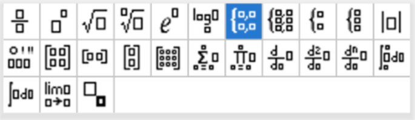<figcaption>Vorlagen-Taste (neben der 9): mathematische Vorlagen</figcaption></figure>'+
              ineqPalette(0, 'ctrl = : Ungleichheitszeichen und Bedingungsstrich')+
              trigPalette()+
            '</div>';
    app.innerHTML = html;
    document.getElementById("backBtn").addEventListener("click", function(){
      state.screen = state.returnTo === "level" ? "level" : "start";
      render();
    });
    Array.prototype.forEach.call(app.querySelectorAll(".seelink"), function(b){
      b.addEventListener("click", function(){ openHit({kind:"theory", level:parseInt(b.getAttribute("data-lvl"),10), sec:parseInt(b.getAttribute("data-sec"),10)}); });
    });
  }

  /* ================= master render ================= */
  function render(){
    if(state.screen === "start"){ renderStart(); }
    else if(state.screen === "level"){ renderLevel(); }
    else if(state.screen === "reference"){ renderReference(); }
    applyFocus();
  }

  render();
})();
</script>

</html>
